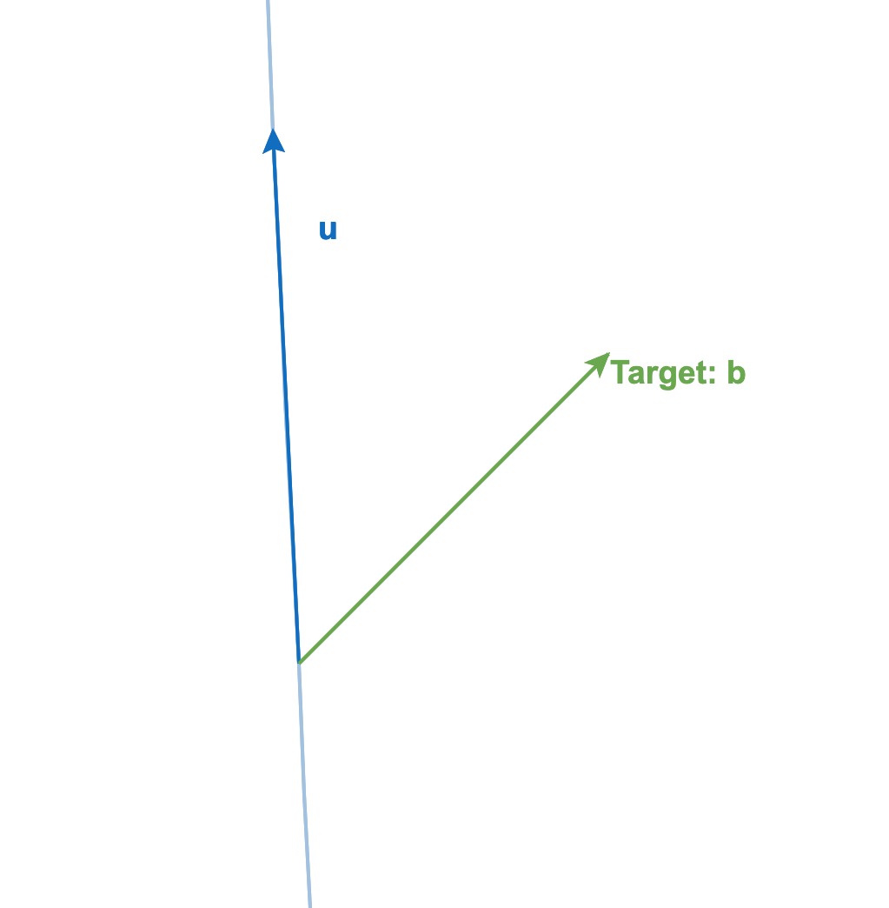
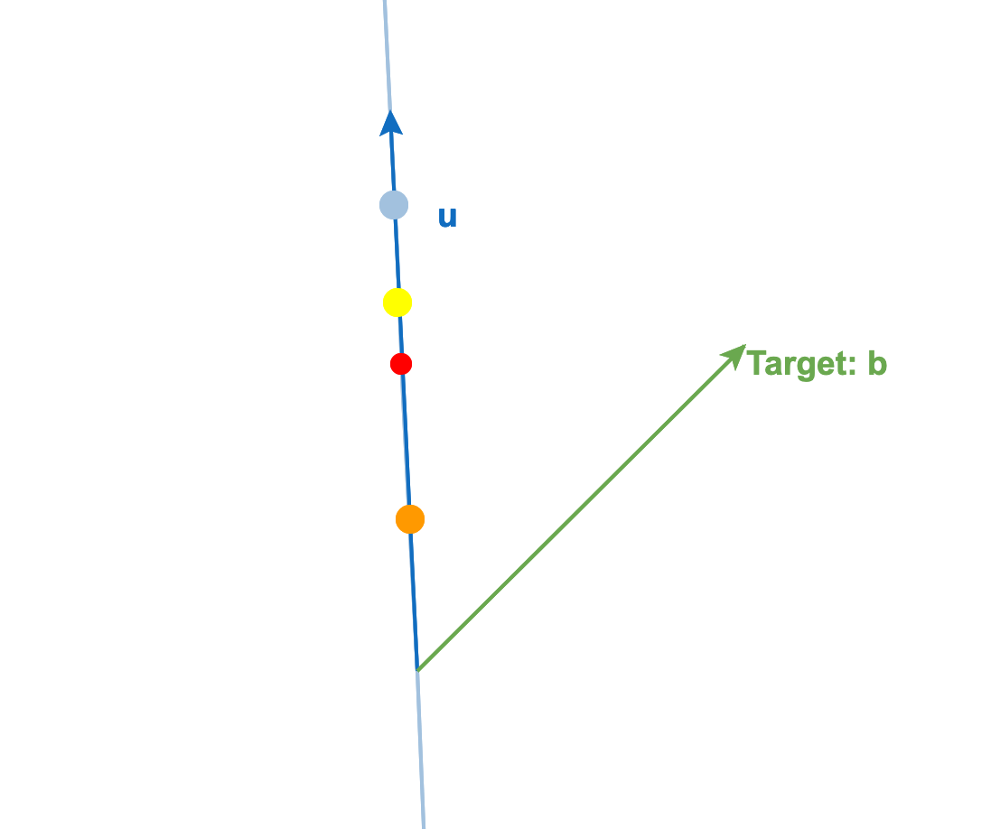
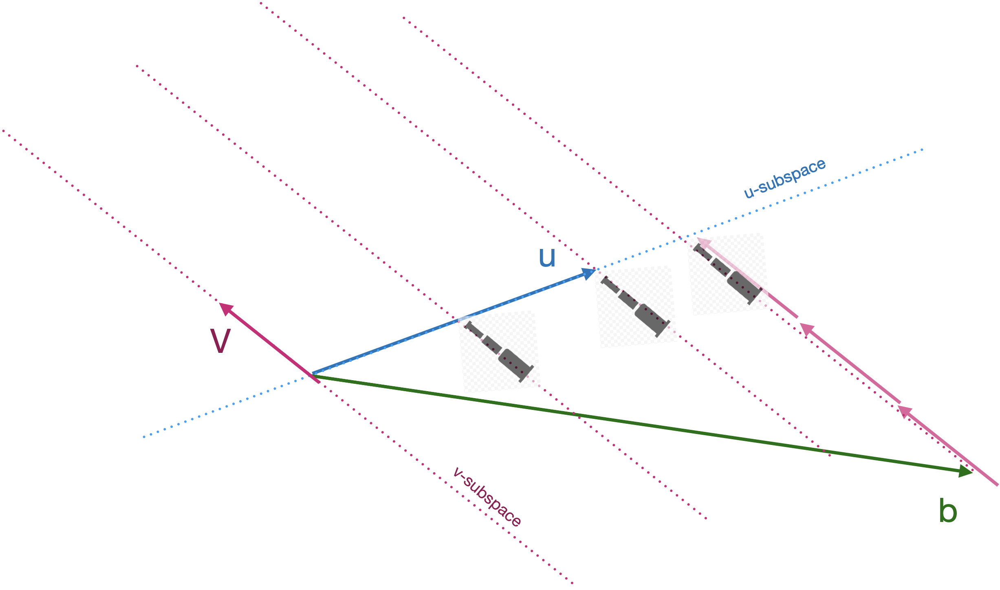
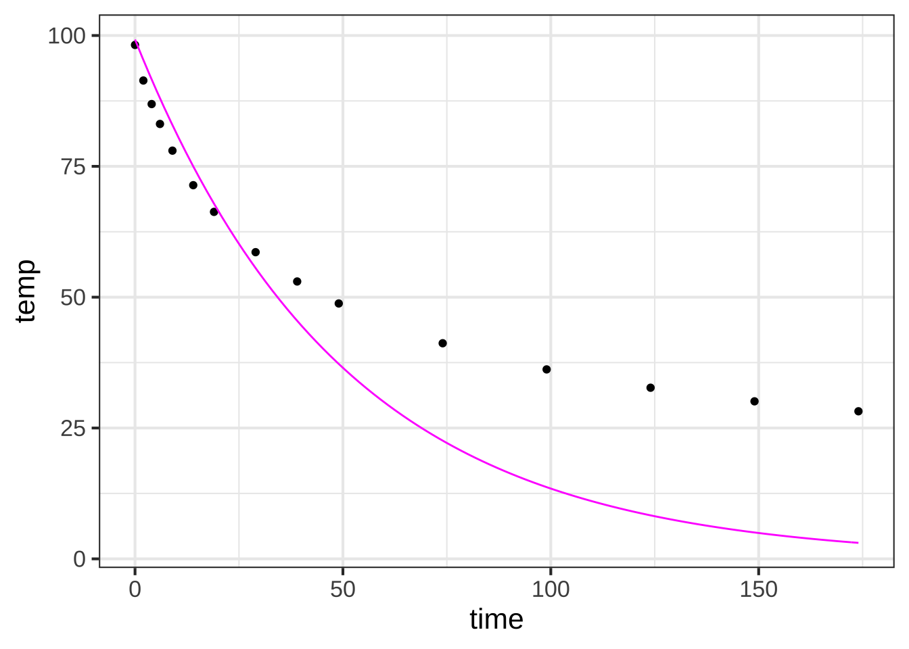
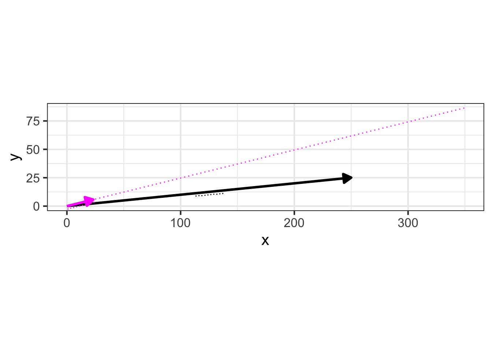
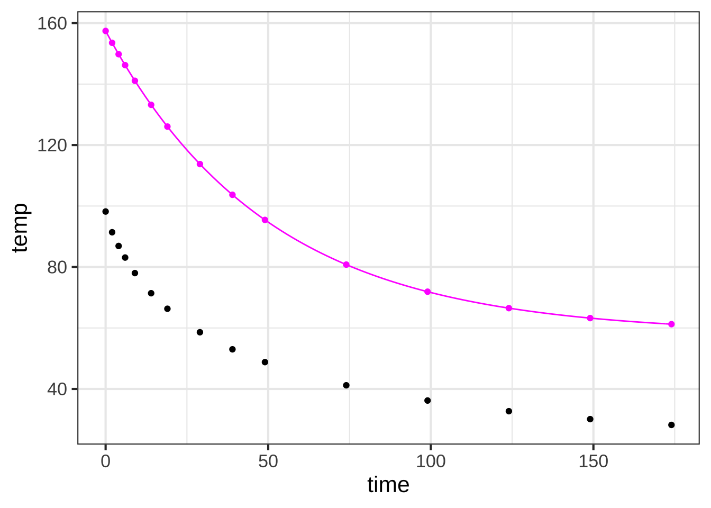

<!DOCTYPE html>
<html lang="" xml:lang="">
<head>

  <meta charset="utf-8" />
  <meta http-equiv="X-UA-Compatible" content="IE=edge" />
  <title>Chapter 43 Projection &amp; residual | MOSAIC-Calculus.knit</title>
  <meta name="description" content="" />
  <meta name="generator" content="bookdown 0.23 and GitBook 2.6.7" />

  <meta property="og:title" content="Chapter 43 Projection &amp; residual | MOSAIC-Calculus.knit" />
  <meta property="og:type" content="book" />
  
  
  
  

  <meta name="twitter:card" content="summary" />
  <meta name="twitter:title" content="Chapter 43 Projection &amp; residual | MOSAIC-Calculus.knit" />
  
  
  


  <meta name="viewport" content="width=device-width, initial-scale=1" />
  <meta name="apple-mobile-web-app-capable" content="yes" />
  <meta name="apple-mobile-web-app-status-bar-style" content="black" />
  
  
<link rel="prev" href="linear-combinations-of-vectors.html"/>
<link rel="next" href="target-problem.html"/>
<script src="libs/header-attrs-2.11/header-attrs.js"></script>
<script src="libs/jquery-3.6.0/jquery-3.6.0.min.js"></script>
<link href="libs/gitbook-2.6.7/css/style.css" rel="stylesheet" />
<link href="libs/gitbook-2.6.7/css/plugin-table.css" rel="stylesheet" />
<link href="libs/gitbook-2.6.7/css/plugin-bookdown.css" rel="stylesheet" />
<link href="libs/gitbook-2.6.7/css/plugin-highlight.css" rel="stylesheet" />
<link href="libs/gitbook-2.6.7/css/plugin-search.css" rel="stylesheet" />
<link href="libs/gitbook-2.6.7/css/plugin-fontsettings.css" rel="stylesheet" />
<link href="libs/gitbook-2.6.7/css/plugin-clipboard.css" rel="stylesheet" />


<link href="libs/anchor-sections-1.0.1/anchor-sections.css" rel="stylesheet" />
<script src="libs/anchor-sections-1.0.1/anchor-sections.js"></script>
<script src="libs/kePrint-0.0.1/kePrint.js"></script>
<link href="libs/lightable-0.0.1/lightable.css" rel="stylesheet" />
<span class="math inline">
\(\newcommand{\line}{\text{line}}
\newcommand{\hump}{\text{hump}}
\newcommand{\sigmoid}{\text{sigmoid}}
\newcommand{\recip}{\text{recip}}
\newcommand{\diff}[1]{{\cal D}_#1}
\newcommand{\pnorm}{\text{pnorm}}
\newcommand{\dnorm}{\text{dnorm}}
\newcommand{\CC}[1]{\color{#648fff}{#1}}
\newcommand{\CE}[1]{\color{#785ef0}{#1}}
\newcommand{\CA}[1]{\color{#dc267f}{#1}}
\newcommand{\CB}[1]{\color{#fe6100}{#1}}
\newcommand{\CD}[1]{\color{#ffb000}{#1}}\)
</span>


<style type="text/css">
pre > code.sourceCode { white-space: pre; position: relative; }
pre > code.sourceCode > span { display: inline-block; line-height: 1.25; }
pre > code.sourceCode > span:empty { height: 1.2em; }
.sourceCode { overflow: visible; }
code.sourceCode > span { color: inherit; text-decoration: inherit; }
pre.sourceCode { margin: 0; }
@media screen {
div.sourceCode { overflow: auto; }
}
@media print {
pre > code.sourceCode { white-space: pre-wrap; }
pre > code.sourceCode > span { text-indent: -5em; padding-left: 5em; }
}
pre.numberSource code
  { counter-reset: source-line 0; }
pre.numberSource code > span
  { position: relative; left: -4em; counter-increment: source-line; }
pre.numberSource code > span > a:first-child::before
  { content: counter(source-line);
    position: relative; left: -1em; text-align: right; vertical-align: baseline;
    border: none; display: inline-block;
    -webkit-touch-callout: none; -webkit-user-select: none;
    -khtml-user-select: none; -moz-user-select: none;
    -ms-user-select: none; user-select: none;
    padding: 0 4px; width: 4em;
    color: #aaaaaa;
  }
pre.numberSource { margin-left: 3em; border-left: 1px solid #aaaaaa;  padding-left: 4px; }
div.sourceCode
  {   }
@media screen {
pre > code.sourceCode > span > a:first-child::before { text-decoration: underline; }
}
code span.al { color: #ff0000; font-weight: bold; } /* Alert */
code span.an { color: #60a0b0; font-weight: bold; font-style: italic; } /* Annotation */
code span.at { color: #7d9029; } /* Attribute */
code span.bn { color: #40a070; } /* BaseN */
code span.bu { } /* BuiltIn */
code span.cf { color: #007020; font-weight: bold; } /* ControlFlow */
code span.ch { color: #4070a0; } /* Char */
code span.cn { color: #880000; } /* Constant */
code span.co { color: #60a0b0; font-style: italic; } /* Comment */
code span.cv { color: #60a0b0; font-weight: bold; font-style: italic; } /* CommentVar */
code span.do { color: #ba2121; font-style: italic; } /* Documentation */
code span.dt { color: #902000; } /* DataType */
code span.dv { color: #40a070; } /* DecVal */
code span.er { color: #ff0000; font-weight: bold; } /* Error */
code span.ex { } /* Extension */
code span.fl { color: #40a070; } /* Float */
code span.fu { color: #06287e; } /* Function */
code span.im { } /* Import */
code span.in { color: #60a0b0; font-weight: bold; font-style: italic; } /* Information */
code span.kw { color: #007020; font-weight: bold; } /* Keyword */
code span.op { color: #666666; } /* Operator */
code span.ot { color: #007020; } /* Other */
code span.pp { color: #bc7a00; } /* Preprocessor */
code span.sc { color: #4070a0; } /* SpecialChar */
code span.ss { color: #bb6688; } /* SpecialString */
code span.st { color: #4070a0; } /* String */
code span.va { color: #19177c; } /* Variable */
code span.vs { color: #4070a0; } /* VerbatimString */
code span.wa { color: #60a0b0; font-weight: bold; font-style: italic; } /* Warning */
</style>


<link rel="stylesheet" href="mosaic-calc-style.css" type="text/css" />
</head>

<body>


  <div class="book without-animation with-summary font-size-2 font-family-1" data-basepath=".">

    <div class="book-summary">
      <nav role="navigation">

<ul class="summary">
<li><a href="../docs/welcome-to-calculus.html">Welcome to calculus</li>
<li><a href="../block-1/change.html">Block 1: Functions & quantities</a></li>
<li><a href="../block-2/change-relatonships.html">Block 2: Differentiation</a></li>
<li><a href="../block-3/change-accumulation.html">Block 3: Accumulation</a></li>
<li><a href="../block-4/introduction.html">Block 4: Manifestations</a></li>
<hr>
<li><strong><a href="./">Block 5: Linear combinations</strong></a></li>

<li class="divider"></li>
<li class="chapter" data-level="41" data-path="vectors-draft.html"><a href="vectors-draft.html"><i class="fa fa-check"></i><b>41</b> Vectors Draft</a>
<ul>
<li class="chapter" data-level="41.1" data-path="vectors-draft.html"><a href="vectors-draft.html#length-direction"><i class="fa fa-check"></i><b>41.1</b> Length &amp; direction</a></li>
<li class="chapter" data-level="41.2" data-path="vectors-draft.html"><a href="vectors-draft.html#the-nth-dimension"><i class="fa fa-check"></i><b>41.2</b> The n<sup>th</sup> dimension</a></li>
<li class="chapter" data-level="41.3" data-path="vectors-draft.html"><a href="vectors-draft.html#geometry-arithmetic"><i class="fa fa-check"></i><b>41.3</b> Geometry &amp; arithmetic</a></li>
<li class="chapter" data-level="41.4" data-path="vectors-draft.html"><a href="vectors-draft.html#angles"><i class="fa fa-check"></i><b>41.4</b> Angles</a></li>
<li class="chapter" data-level="41.5" data-path="vectors-draft.html"><a href="vectors-draft.html#orthogonality"><i class="fa fa-check"></i><b>41.5</b> Orthogonality</a></li>
<li class="chapter" data-level="41.6" data-path="vectors-draft.html"><a href="vectors-draft.html#exercises"><i class="fa fa-check"></i><b>41.6</b> Exercises</a></li>
<li class="chapter" data-level="41.7" data-path="vectors-draft.html"><a href="vectors-draft.html#outline"><i class="fa fa-check"></i><b>41.7</b> Outline</a></li>
</ul></li>
<li class="chapter" data-level="42" data-path="linear-combinations-of-vectors.html"><a href="linear-combinations-of-vectors.html"><i class="fa fa-check"></i><b>42</b> Linear combinations of vectors</a>
<ul>
<li class="chapter" data-level="42.1" data-path="linear-combinations-of-vectors.html"><a href="linear-combinations-of-vectors.html#scaling"><i class="fa fa-check"></i><b>42.1</b> Scaling</a></li>
<li class="chapter" data-level="42.2" data-path="linear-combinations-of-vectors.html"><a href="linear-combinations-of-vectors.html#sub-spaces"><i class="fa fa-check"></i><b>42.2</b> Sub-spaces</a></li>
<li class="chapter" data-level="42.3" data-path="linear-combinations-of-vectors.html"><a href="linear-combinations-of-vectors.html#functions-as-vectors"><i class="fa fa-check"></i><b>42.3</b> Functions as vectors</a></li>
<li class="chapter" data-level="42.4" data-path="linear-combinations-of-vectors.html"><a href="linear-combinations-of-vectors.html#matrices"><i class="fa fa-check"></i><b>42.4</b> Matrices</a></li>
<li class="chapter" data-level="42.5" data-path="linear-combinations-of-vectors.html"><a href="linear-combinations-of-vectors.html#exercises-1"><i class="fa fa-check"></i><b>42.5</b> Exercises</a></li>
</ul></li>
<li class="chapter" data-level="43" data-path="projection-residual.html"><a href="projection-residual.html"><i class="fa fa-check"></i><b>43</b> Projection &amp; residual</a>
<ul>
<li class="chapter" data-level="43.1" data-path="projection-residual.html"><a href="projection-residual.html#projecting-a-vector-onto-another-vector"><i class="fa fa-check"></i><b>43.1</b> Projecting a vector onto another vector</a></li>
<li class="chapter" data-level="43.2" data-path="projection-residual.html"><a href="projection-residual.html#projection-onto-a-set-of-vectors"><i class="fa fa-check"></i><b>43.2</b> Projection onto a set of vectors</a></li>
<li class="chapter" data-level="43.3" data-path="projection-residual.html"><a href="projection-residual.html#exercises-2"><i class="fa fa-check"></i><b>43.3</b> Exercises</a></li>
<li class="chapter" data-level="43.4" data-path="projection-residual.html"><a href="projection-residual.html#moved-from-vectors"><i class="fa fa-check"></i><b>43.4</b> MOVED FROM VECTORS</a></li>
<li class="chapter" data-level="43.5" data-path="projection-residual.html"><a href="projection-residual.html#matrix"><i class="fa fa-check"></i><b>43.5</b> Matrix</a></li>
<li class="chapter" data-level="43.6" data-path="projection-residual.html"><a href="projection-residual.html#scalar-multiplication"><i class="fa fa-check"></i><b>43.6</b> Scalar multiplication</a></li>
<li class="chapter" data-level="43.7" data-path="projection-residual.html"><a href="projection-residual.html#dot-product-and"><i class="fa fa-check"></i><b>43.7</b> Dot product and <code>%*%</code></a></li>
<li class="chapter" data-level="43.8" data-path="projection-residual.html"><a href="projection-residual.html#vector-lengths"><i class="fa fa-check"></i><b>43.8</b> Vector lengths</a></li>
<li class="chapter" data-level="43.9" data-path="projection-residual.html"><a href="projection-residual.html#outline-1"><i class="fa fa-check"></i><b>43.9</b> Outline</a></li>
</ul></li>
<li class="chapter" data-level="44" data-path="target-problem.html"><a href="target-problem.html"><i class="fa fa-check"></i><b>44</b> The target problem</a>
<ul>
<li class="chapter" data-level="44.1" data-path="target-problem.html"><a href="target-problem.html#properties-of-the-solution"><i class="fa fa-check"></i><b>44.1</b> Properties of the solution</a></li>
<li class="chapter" data-level="44.2" data-path="target-problem.html"><a href="target-problem.html#the-geometry-of-qr.solve"><i class="fa fa-check"></i><b>44.2</b> The geometry of <code>qr.solve()</code></a></li>
<li class="chapter" data-level="44.3" data-path="target-problem.html"><a href="target-problem.html#finding-the-target-with-qr"><i class="fa fa-check"></i><b>44.3</b> Finding the target with QR</a></li>
</ul></li>
<li class="divider"></li>
<li><a href="../block-6/dynamics.html">Block 6: Dynamics</a></li>

</ul>

      </nav>
    </div>

    <div class="book-body">
      <div class="body-inner">
        <div class="book-header" role="navigation">
          <h1>
            <i class="fa fa-circle-o-notch fa-spin"></i><a href="./"></a>
          </h1>
        </div>

        <div class="page-wrapper" tabindex="-1" role="main">
          <div class="page-inner">

            <section class="normal" id="section-">
<div id="projection-residual" class="section level1" number="3">
<h1><span class="header-section-number">Chapter 43</span> Projection &amp; residual</h1>
<p>In the previous chapter, we took linear combinations of vectors. Using the notation of <strong><em>matrices</em></strong>, we solved the problem
<span class="math display">\[\text{previous chapter:}\ \ {\mathbf A}\, \vec{x} = \vec{?}\]</span> where <span class="math inline">\(\vec{x}\)</span> is a column of coefficients, one coefficient for each of the columns in the matrix <span class="math inline">\({\mathbf A}\)</span>. Finding <span class="math inline">\(\vec{?}\)</span> is a simple, if somewhat tedious, matter of multiplication.</p>
<p><span class="math display">\[\text{this chapter:}\ \ {\mathbf A}\, \vec{?} = \vec{b}\]</span>
In other words, the task of this chapter is to show how to solve <span class="math inline">\({\mathbf A} \vec{x} = \vec{b}\)</span> when we know the result of the linear combination <span class="math inline">\(\vec{b}\)</span>, and the set of vectors being combined, <span class="math inline">\(\mathbf M\)</span>, but we don’t yet know <span class="math inline">\(\vec{x}\)</span>.</p>
<p>As motivation for this “find <span class="math inline">\(\vec{x}\)</span>” problem, we refer you to Figure <a href="linear-combinations-of-vectors.html#fig:water-dots">42.5</a> which showed the temperature-vs-time data from the <code>CoolingWater</code> data frame. That figure shows several possible linear combinations of the vectors <span class="math inline">\(u(t) \equiv e^{-0.02 t}\)</span> (we called this <code>expkt</code>) and <span class="math inline">\(v(t) \equiv 1\)</span> (we called this <code>intercept</code>). Suppose we seek to find the particular linear combination of <span class="math inline">\(u(t)\)</span> and <span class="math inline">\(v(t)\)</span> that comes as close as possible to the black dots in the figure. That is, we know <span class="math inline">\({\mathbf A}\)</span>: the two columns <code>expkt</code> and <code>intercept</code> from the data frame, and we know <span class="math inline">\(\vec{b}\)</span>: the column <code>temp</code> from the data frame.</p>
<p>This sort of problem is extremely common and important throughout quantitative fields of all sorts, from astronomy to zoology, and is one of the foundation techniques in statistics and data science. We’ll present the approach graphically, algorithmically, and computationally.</p>
<div class="takenote">
<p>Let’s highlight the three different modes in which we’re going to introduce the topic of projection and residual. Ultimately, in your professional work, you will rely on</p>
<p><strong><em>computation</em></strong>, getting the computer to do the work. For us in this chapter, the basic R functions you will use are <code>rbind()</code>, <code>cbind()</code>, <code>qr.solve()</code>, and “matrix multiplication” <code>%*%</code>, as well as the usual addition, subtraction, division, square root, and scalar multiplication.<a href="#fn1" class="footnote-ref" id="fnref1"><sup>1</sup></a></p>
<p>As we introduce them, you will want to make sure you know exactly what each of <code>rbind()</code>, <code>cbind()</code>, <code>qr.solve()</code>, and <code>%*%</code> are used for. In the world of linear combinations, these are fundamental operations.</p>
<p><strong>algorithmic</strong> describes a process of carrying out an operation. The R operators <code>qr.solve()</code> and <code>%*%</code> (and others!) are implemented as software. That software describes a series of steps to accomplish the operation. With linear combinations, most of those steps are <strong>arithmetic</strong> as with the dot product and vector length.</p>
<p>We will show the arithmetic steps for the vector operations in the simple case of one, two, or three vectors. The generalization to more vectors requires the organizational principles provided by computer languages, and this is not a course in computer programming. By rendering the operations of linear combinations in arithmetic, we hope to provide a better understanding of what’s happening in the operations so you can be an aware consumer of the output of computer programmers.</p>
<p><strong>geometrically</strong> in two and three dimensions. We humans have powerful intuitive abilities to make sense of simple geometric constructions. Since many people are able to assimilate simple geometry more readily than arithmetic, the geometric presentation provides a good alternative route to understanding the mathematics of linear combinations, even though it’s restricted to the simple situations of two and three dimensional space.</p>
<p>Again, ultimately professionals use the <strong>computational</strong> tools for working out tasks in linear combinations. You will use those tools better if you can think about them in terms of arithmetic and geometry.</p>
</div>
<div id="projecting-a-vector-onto-another-vector" class="section level2" number="3.1">
<h2><span class="header-section-number">43.1</span> Projecting a vector onto another vector</h2>
<p>We’ll start with one of the most fundamental operations: projecting one vector onto another. The geometric situation is shown in Figure <a href="projection-residual.html#fig:proj1">43.1</a>. In our notation, we will <strong>always</strong> write the vector being projected as <span class="math inline">\(\vec{b}\)</span> or some variation of the letter “b.” The vectors onto which <span class="math inline">\(\vec{b}\)</span> is being projected will be written <span class="math inline">\(\vec{u}\)</span>, <span class="math inline">\(\vec{v}\)</span>, and so on. In this section, there is only a single vector being projected onto, and we’re calling it <span class="math inline">\(\vec{u}\)</span>.</p>
<div class="figure" style="text-align: center"><span style="display:block;" id="fig:proj1"></span>

<p class="caption">
Figure 43.1: Two vectors. Vector <span class="math inline">\(\vec{b}\)</span> is to be projected onto vector <span class="math inline">\(\vec{u}\)</span>.
</p>
</div>
<p>A physical analogy for projection is the casting of shadows on a screen in the same manner as an old-fashioned slide projector or movie projector. The vector <span class="math inline">\(\vec{u}\)</span> is the screen. The light source is arranged to generate parallel rays which arrive perpendicularly to the screen. In this situation, the shadow cast by <span class="math inline">\(\vec{b}\)</span> on the screen <span class="math inline">\(\vec{u}\)</span> is the “projection of <span class="math inline">\(\vec{b}\)</span> onto <span class="math inline">\(\vec{u}\)</span>.”</p>
<p>In terms of vector-language, the projection of <span class="math inline">\(\vec{b}\)</span> onto <span class="math inline">\(\vec{u}\)</span> is the vector <span class="math inline">\(\alpha\,\vec{u}\)</span> where the scalar multiplier <span class="math inline">\(\alpha\)</span> is selected to place <span class="math inline">\(\alpha\,\vec{u}\)</span> as <strong>close as possible</strong> to <span class="math inline">\(\vec{b}\)</span>.</p>
<p>What do we mean exactly by “as close as possible?” We need to render this into vector-language. We’ll do this by a combination of length and vector subtraction. For any scalar value of <span class="math inline">\(\alpha\)</span>, there is a vector <span class="math inline">\(\vec{b} - \alpha\, \vec{u}\)</span>. Figure <a href="projection-residual.html#fig:proj-2">43.2</a> shows the situation for a handful of candidates for <span class="math inline">\(\alpha\)</span>. As always, the vector <span class="math inline">\(\alpha\,\vec{u}\)</span> lies on the linear subspace defined by <span class="math inline">\(\vec{u}\)</span>. Supposing that <span class="math inline">\(\alpha = 2\)</span>, corresponding to the blue dot in Figure <a href="projection-residual.html#fig:proj-2">43.2</a>, the vector <span class="math inline">\(\vec{b} - \alpha\,\vec{u}\)</span> is the vector extending from the blue dot to the tip of <span class="math inline">\(\vec{b}\)</span>.</p>
<div class="figure" style="text-align: center"><span style="display:block;" id="fig:proj-2"></span>

<p class="caption">
Figure 43.2: The vector <span class="math inline">\(\alpha\,\vec{u}\)</span> is shown for several values of <span class="math inline">\(\alpha\)</span>$, each value being marked by a colored dot. (The values shown are roughly $lpha = $1.1 (orange), 1.3 (yellow), 1.6 (red), and 2.0 (blue).) The vector <span class="math inline">\(\vec{b} - \alpha\,\vec{u}\)</span> for each of the colors is indicated by a dashed line connecting the tip of <span class="math inline">\(\alpha\,\vec{u}\)</span> to the tip of <span class="math inline">\(\vec{b}\)</span>.
</p>
</div>
<p>In this context, “as close as possible” means the value of <span class="math inline">\(\alpha\)</span> that makes the length <span class="math inline">\(\| \vec{b} - \alpha\,\vec{u} \|\)</span> as small as possible. It’s possible for many people to find the argmin <span class="math inline">\(\alpha^\star\)</span> by eye. In the Figure, the orange and blue dots are clearly not the best. Yellow and red are about the same length, with yellow winning by a hair.</p>
<p>The vector <span class="math inline">\(\vec{b} - \alpha^\star\,\vec{u}\)</span> will always be perpendicular to <span class="math inline">\(\vec{u}\)</span>. In other words, the three vectors <span class="math inline">\(\vec{b}\)</span>, <span class="math inline">\(\alpha^\star\,\vec{u}\)</span>, and <span class="math inline">\(\vec{b}-\alpha^\star\,\vec{u}\)</span> will constitute the sides of a <strong><em>right triangle</em></strong>, with <span class="math inline">\(\vec{b}\)</span> as the hypothenuse. This gives an important clue to finding <span class="math inline">\(\alpha^\star\)</span> arithmetically. The <strong>length</strong> of <span class="math inline">\(\alpha^\star\, u\)</span> will be, using the trigonometry of right triangles, <span class="math inline">\(\|\vec{b}\| \cos(\theta)\)</span>, where <span class="math inline">\(\theta\)</span> is the angle between <span class="math inline">\(\vec{u}\)</span> and <span class="math inline">\(\vec{b}\)</span>. Recall that
<span class="math display">\[\cos(\theta) = \frac{\vec{u}\cdot \vec{b}}{\|\vec{u}\|\ \|\vec{b}\|}\ .\]</span></p>
<p>Consequently, <span class="math display">\[\|\vec{b}\| \cos(\theta) = \frac{\vec{u}\cdot \vec{b}}{\|\vec{u}\|}\]</span></p>
<p>The above quantity is a length. But the projection of <span class="math inline">\(\vec{b}\)</span> onto <span class="math inline">\(\vec{u}\)</span> will be a vector. Since we know <span class="math inline">\(\vec{u}\)</span>, we know the direction of the result of the projection. and the previous formula gives the length. We can create the <strong><em>unit-length vector</em></strong> pointing in the direction of <span class="math inline">\(\vec{u}\)</span> by appropriate scaling: <span class="math inline">\(\vec{u} / \|\vec{u} \|\)</span>. So the projection of <span class="math inline">\(\vec{b}\)</span> onto <span class="math inline">\(\vec{u}\)</span>, which we’ll denote by <span class="math inline">\(\overset{\longrightarrow}{b \|_{u}}\)</span> is
<span class="math display">\[\overset{\longrightarrow}{{b}\|_{u}} = \underbrace{\frac{\vec{u}\cdot\vec{b}}{\|\vec{u}\|}}_\text{length}\underbrace{\frac{\vec{u}}{\|\vec{u} \|}}_\text{direction} = \frac{\vec{u}\cdot\vec{b}}{\vec{u}\cdot\vec{u}} \vec{u} = \alpha^\star\,\vec{u}\]</span></p>
<p>Read <span class="math inline">\(\overset{\longrightarrow}{b \|_{u}}\)</span> as “the component of <span class="math inline">\(\vec{b}\)</span> parallel to <span class="math inline">\(\vec{u}\)</span>,” or as “<span class="math inline">\(\vec{b}\)</span> projected onto <span class="math inline">\(\vec{u}\)</span>.”</p>
<p>Remember that the vector <span class="math inline">\(\vec{b} - \alpha^\star\, \vec{u}\)</span> is perpendicular to <span class="math inline">\(\vec{u}\)</span> and connects <span class="math inline">\(\overset{\longrightarrow}{b \|_{u}}\)</span> to <span class="math inline">\(\vec{b}\)</span>. This vector, called the <strong><em>residual vector</em></strong> in statistics, we will denote with
<span class="math display">\[\overset{\longrightarrow}{b\! \perp_u}\]</span>
which you can pronounce as “the component of <span class="math inline">\(\vec{b}\)</span> <strong>perpendicular</strong> to <span class="math inline">\(\vec{u}\)</span>,” or as “the residual from projecting <span class="math inline">\(\vec{b}\)</span> onto <span class="math inline">\(\vec{u}\)</span>.” Adding up the projection of <span class="math inline">\(\vec{b}\)</span> onto <span class="math inline">\(\vec{u}\)</span> and the residual vector from that projection reproduces the original <span class="math inline">\(\vec{b}\)</span>:</p>
<p><span class="math display">\[\overset{\longrightarrow}{b\|_u}\ +\ \overset{\longrightarrow}{b\! \perp_u} = \vec{b}\ .\]</span></p>
<div class="todo">
<p>MOVE THESE FUNCTIONS to <code>{mosaicCalc}</code>. We’re going to give the students some training wheels</p>
<div class="sourceCode" id="cb10"><pre class="sourceCode r"><code class="sourceCode r"><span id="cb10-1"><a href="projection-residual.html#cb10-1" aria-hidden="true" tabindex="-1"></a><span class="st">`</span><span class="at">%dot%</span><span class="st">`</span> <span class="ot">&lt;-</span> <span class="cf">function</span>(u, v) {</span>
<span id="cb10-2"><a href="projection-residual.html#cb10-2" aria-hidden="true" tabindex="-1"></a>  <span class="fu">sum</span>(u <span class="sc">*</span> v)</span>
<span id="cb10-3"><a href="projection-residual.html#cb10-3" aria-hidden="true" tabindex="-1"></a>}</span>
<span id="cb10-4"><a href="projection-residual.html#cb10-4" aria-hidden="true" tabindex="-1"></a><span class="st">`</span><span class="at">%onto%</span><span class="st">`</span> <span class="ot">&lt;-</span> <span class="cf">function</span>(b, A) {</span>
<span id="cb10-5"><a href="projection-residual.html#cb10-5" aria-hidden="true" tabindex="-1"></a>  A <span class="sc">%*%</span> <span class="fu">qr.solve</span>(A, b)</span>
<span id="cb10-6"><a href="projection-residual.html#cb10-6" aria-hidden="true" tabindex="-1"></a>}</span>
<span id="cb10-7"><a href="projection-residual.html#cb10-7" aria-hidden="true" tabindex="-1"></a><span class="st">`</span><span class="at">%perp%</span><span class="st">`</span> <span class="ot">&lt;-</span> <span class="cf">function</span>(b, A) {</span>
<span id="cb10-8"><a href="projection-residual.html#cb10-8" aria-hidden="true" tabindex="-1"></a>  b <span class="sc">-</span> (b <span class="sc">%onto%</span> A)</span>
<span id="cb10-9"><a href="projection-residual.html#cb10-9" aria-hidden="true" tabindex="-1"></a>}</span>
<span id="cb10-10"><a href="projection-residual.html#cb10-10" aria-hidden="true" tabindex="-1"></a>as_unit <span class="ot">&lt;-</span> <span class="cf">function</span>(A) {</span>
<span id="cb10-11"><a href="projection-residual.html#cb10-11" aria-hidden="true" tabindex="-1"></a>  helper <span class="ot">&lt;-</span> <span class="cf">function</span>(v) { v <span class="sc">/</span> <span class="fu">sqrt</span>(<span class="fu">sum</span>(v<span class="sc">^</span><span class="dv">2</span>)) }</span>
<span id="cb10-12"><a href="projection-residual.html#cb10-12" aria-hidden="true" tabindex="-1"></a>  <span class="fu">apply</span>(A, <span class="dv">2</span>, helper)</span>
<span id="cb10-13"><a href="projection-residual.html#cb10-13" aria-hidden="true" tabindex="-1"></a>}</span>
<span id="cb10-14"><a href="projection-residual.html#cb10-14" aria-hidden="true" tabindex="-1"></a>as_mag <span class="ot">&lt;-</span> <span class="cf">function</span>(A, <span class="at">method=</span><span class="fu">c</span>(<span class="st">&quot;2&quot;</span>, <span class="st">&quot;O&quot;</span>, <span class="st">&quot;I&quot;</span>, <span class="st">&quot;F&quot;</span>, <span class="st">&quot;M&quot;</span>)) {</span>
<span id="cb10-15"><a href="projection-residual.html#cb10-15" aria-hidden="true" tabindex="-1"></a>  method <span class="ot">&lt;-</span> <span class="fu">match.arg</span>(method)</span>
<span id="cb10-16"><a href="projection-residual.html#cb10-16" aria-hidden="true" tabindex="-1"></a>  helper <span class="ot">&lt;-</span> <span class="cf">function</span>(v) {Matrix<span class="sc">::</span><span class="fu">norm</span>(v, <span class="at">type=</span>method)}</span>
<span id="cb10-17"><a href="projection-residual.html#cb10-17" aria-hidden="true" tabindex="-1"></a>  </span>
<span id="cb10-18"><a href="projection-residual.html#cb10-18" aria-hidden="true" tabindex="-1"></a>  <span class="fu">apply</span>(A, <span class="dv">2</span>, helper)</span>
<span id="cb10-19"><a href="projection-residual.html#cb10-19" aria-hidden="true" tabindex="-1"></a>}</span></code></pre></div>
<p>Using the geometry of vectors and a little bit of trigonometry, we have now created the arithmetic formulas needed to:</p>
<ol style="list-style-type: lower-roman">
<li><strong>Project a vector <span class="math inline">\(\vec{b}\)</span> onto another vector <span class="math inline">\(\vec{u}\)</span></strong>, and</li>
<li><strong>Find the residual vector from the projection.</strong></li>
</ol>
<p>To help you make the transition from arithmetic to computation, we provide you with two training-wheel functions, <code>%onto%</code> and <code>%perp</code>. Use them like this:</p>
<div class="sourceCode" id="cb11"><pre class="sourceCode r"><code class="sourceCode r"><span id="cb11-1"><a href="projection-residual.html#cb11-1" aria-hidden="true" tabindex="-1"></a>b <span class="ot">&lt;-</span> <span class="fu">rbind</span>(<span class="dv">3</span>, <span class="dv">1</span>, <span class="dv">7</span>, <span class="dv">4</span>)</span>
<span id="cb11-2"><a href="projection-residual.html#cb11-2" aria-hidden="true" tabindex="-1"></a>u <span class="ot">&lt;-</span> <span class="fu">rbind</span>(<span class="dv">1</span>,<span class="dv">1</span>,<span class="dv">1</span>,<span class="dv">1</span>)</span></code></pre></div>
<div>
<span>
<pre class='r'  style='width:40%;overflow:auto;float:left;'>b %onto% u</pre>
<span>        <span class="math inline">\(\left[\strut\begin{array}{rrrrrrrrrrrrrrrrrrrrrrrrrrrrr}3.75\\ 3.75\\ 3.75\\ 3.75\\\end{array}\right]\)</span>
</div>
<p></br></p>
<div>
<span>
<pre class='r'  style='width:40%;overflow:auto;float:left;'>b %perp% u</pre>
<span>        <span class="math inline">\(\left[\strut\begin{array}{rrrrrrrrrrrrrrrrrrrrrrrrrrrrr}-0.75\\ -2.75\\ 3.25\\ 0.25\\\end{array}\right]\)</span>
</div>
<p></br></p>
</div>
<div class="example">
<p><span id="exm:unlabeled-div-3" class="example"><strong>Example 43.1  </strong></span>Using <code>%dot%</code>, <code>%perp%</code> and <code>%onto%</code> and two vectors <span class="math inline">\(\vec{b}\)</span> and <span class="math inline">\(\vec{u}\)</span> of your own choosing, demonstrate that
<span class="math display">\[\overset{\longrightarrow}{b\|_u}\ +\ \overset{\longrightarrow}{b\! \perp_u} = \vec{b}\|\]</span> and that <span class="math inline">\(\overset{\longrightarrow}{b\|_u}\)</span> is perpendicular to <span class="math inline">\(\overset{\longrightarrow}{b\! \perp_u}\)</span>.</p>
<p>For instance,</p>
<div class="sourceCode" id="cb12"><pre class="sourceCode r"><code class="sourceCode r"><span id="cb12-1"><a href="projection-residual.html#cb12-1" aria-hidden="true" tabindex="-1"></a><span class="co"># create your own vectors!</span></span>
<span id="cb12-2"><a href="projection-residual.html#cb12-2" aria-hidden="true" tabindex="-1"></a>b <span class="ot">&lt;-</span> <span class="fu">rbind</span>(<span class="dv">8</span>, <span class="sc">-</span><span class="dv">3</span>, <span class="dv">2</span>, <span class="dv">1</span>, <span class="dv">4</span>)</span>
<span id="cb12-3"><a href="projection-residual.html#cb12-3" aria-hidden="true" tabindex="-1"></a>u <span class="ot">&lt;-</span> <span class="fu">rbind</span>(<span class="dv">1</span>,  <span class="dv">2</span>, <span class="dv">1</span>, <span class="dv">2</span>, <span class="dv">3</span>)</span>
<span id="cb12-4"><a href="projection-residual.html#cb12-4" aria-hidden="true" tabindex="-1"></a><span class="co"># demonstrate properties</span></span>
<span id="cb12-5"><a href="projection-residual.html#cb12-5" aria-hidden="true" tabindex="-1"></a>projected <span class="ot">&lt;-</span> b <span class="sc">%onto%</span> u</span>
<span id="cb12-6"><a href="projection-residual.html#cb12-6" aria-hidden="true" tabindex="-1"></a>residual <span class="ot">&lt;-</span> b <span class="sc">%perp%</span> u</span></code></pre></div>
<div>
<span>
<pre class='r'  style='width:40%;overflow:auto;float:left;'>projected + residual</pre>
<span>        <span class="math inline">\(\left[\strut\begin{array}{rrrrrrrrrrrrrrrrrrrrrrrrrrrrr}8\\ -3\\ 2\\ 1\\ 4\\\end{array}\right]\)</span>
</div>
<p></br></p>
<pre class='r'  style='width:40%;overflow:auto;'>projected %dot% residual</pre>
<p>       <span class="math inline">\(0\)</span></br></p>
</div>
<div class="example">
<p><span id="exm:unlabeled-div-4" class="example"><strong>Example 43.2  </strong></span>Show that <span class="math inline">\(\overset{\longrightarrow}{b\|_u}\)</span> is parallel to <span class="math inline">\(\vec{u}\)</span>.</p>
<p>Two vectors are parallel if one of them is a scalar multiple of the other.
For instance, suppose we have three vectors <span class="math inline">\(\vec{u}\)</span>, <span class="math inline">\(\vec{v}\)</span>, and <span class="math inline">\(\vec{w}\)</span>, like this:</p>
<div class="sourceCode" id="cb13"><pre class="sourceCode r"><code class="sourceCode r"><span id="cb13-1"><a href="projection-residual.html#cb13-1" aria-hidden="true" tabindex="-1"></a>u <span class="ot">&lt;-</span> <span class="fu">rbind</span>(<span class="dv">1</span>, <span class="dv">2</span>, <span class="dv">3</span>)</span>
<span id="cb13-2"><a href="projection-residual.html#cb13-2" aria-hidden="true" tabindex="-1"></a>v <span class="ot">&lt;-</span> <span class="fu">rbind</span>(<span class="dv">2</span>, <span class="dv">4</span>, <span class="dv">6</span>)</span>
<span id="cb13-3"><a href="projection-residual.html#cb13-3" aria-hidden="true" tabindex="-1"></a>b <span class="ot">&lt;-</span> <span class="fu">rbind</span>(<span class="dv">3</span>, <span class="dv">1</span>, <span class="dv">2</span>)</span></code></pre></div>
<p>Notice that <span class="math inline">\(\vec{v} = 2 \vec{u}\)</span>, that is, <span class="math inline">\(\vec{u}\)</span> and <span class="math inline">\(\vec{v}\)</span> are parallel. Here’s what we get when we divide <span class="math inline">\(\vec{v}\)</span> by <span class="math inline">\(\vec{u}\)</span> on a component-by-component basis:</p>
<div>
<span>
<pre class='r'  style='width:40%;overflow:auto;float:left;'>v/u</pre>
<span>        <span class="math inline">\(\left[\strut\begin{array}{rrrrrrrrrrrrrrrrrrrrrrrrrrrrr}2\\ 2\\ 2\\\end{array}\right]\)</span>
</div>
<p></br></p>
<p>Every component of <span class="math inline">\(\vec{v}\)</span> is the same multiple of the corresponding component of <span class="math inline">\(\vec{u}\)</span>.</p>
<p>On the other hand, <span class="math inline">\(\vec{b}\)</span> is not a scalar multiple of <span class="math inline">\(\vec{u}\)</span>. Consequently:</p>
<div>
<span>
<pre class='r'  style='width:40%;overflow:auto;float:left;'>b/u</pre>
<span>        <span class="math inline">\(\left[\strut\begin{array}{rrrrrrrrrrrrrrrrrrrrrrrrrrrrr}3\\ 0.5\\ 0.6667\\\end{array}\right]\)</span>
</div>
<p></br></p>
<p>The component-by-component multipliers are not all the same.</p>
<p>Now to show <span class="math inline">\(\overset{\longrightarrow}{b\|_u}\)</span> is parallel to <span class="math inline">\(\vec{u}\)</span>. First, we’ll compute <span class="math inline">\(\overset{\longrightarrow}{b\|_u}\)</span> and then divide it, component-by-component, by <span class="math inline">\(\vec{u}\)</span></p>
<div>
<span>
<pre class='r'  style='width:40%;overflow:auto;float:left;'>(b %onto% u)/u</pre>
<span>        <span class="math inline">\(\left[\strut\begin{array}{rrrrrrrrrrrrrrrrrrrrrrrrrrrrr}0.7857\\ 0.7857\\ 0.7857\\\end{array}\right]\)</span>
</div>
<p></br></p>
<p>In contrast, <span class="math inline">\(\overset{\longrightarrow}{b\!\perp_u}\)</span> is, obviously, not parallel to <span class="math inline">\(\vec{u}\)</span>:</p>
<div>
<span>
<pre class='r'  style='width:40%;overflow:auto;float:left;'>(b %perp% u)/u</pre>
<span>        <span class="math inline">\(\left[\strut\begin{array}{rrrrrrrrrrrrrrrrrrrrrrrrrrrrr}2.2143\\ -0.2857\\ -0.119\\\end{array}\right]\)</span>
</div>
<p></br></p>
</div>
<div class="example">
<p><span id="exm:unlabeled-div-5" class="example"><strong>Example 43.3  </strong></span>Find the scalar multiplier <span class="math inline">\(\alpha^\star\)</span> such that <span class="math display">\[\overset{\longrightarrow}{b\!\perp_u} = \alpha^\star\,\vec{u}\ .\]</span></p>
<p>This is just a matter of dividing <span class="math inline">\(\overset{\longrightarrow}{b\!\perp_u}\)</span> by <span class="math inline">\(\vec{u}\)</span> on a component-by-component basis:</p>
<div>
<span>
<pre class='r'  style='width:40%;overflow:auto;float:left;'>(b %onto% u)/u</pre>
<span>        <span class="math inline">\(\left[\strut\begin{array}{rrrrrrrrrrrrrrrrrrrrrrrrrrrrr}0.7857\\ 0.7857\\ 0.7857\\\end{array}\right]\)</span>
</div>
<p></br></p>
<p>We see that <span class="math inline">\(\alpha^\star = 0.7857143\)</span>.</p>
</div>
<div class="takenote">
<p>You should commit the commands used in the previous demonstrations to memory, making sure you understand what each of the commands in the demonstration is doing.</p>
</div>
</div>
<div id="projection-onto-a-set-of-vectors" class="section level2" number="3.2">
<h2><span class="header-section-number">43.2</span> Projection onto a set of vectors</h2>
<p>As we have just seen, projecting a target <span class="math inline">\(\vec{b}\)</span> onto a single vector is a matter of arithmetic:
<span class="math display">\[\overset{\longrightarrow}{b\|_u} = \frac{\vec{u}\cdot\vec{b}}{\vec{u}\cdot\vec{u}} \vec{u}\]</span>
Now we take on the problem of projecting the target <span class="math inline">\(\vec{b}\)</span> onto <strong>two vectors</strong> simultaneously. Following our previous convention, The vectors to be projected onto will be <span class="math inline">\(\vec{u}\)</span> and <span class="math inline">\(\vec{v}\)</span>. We’ll package those vectors into a matrix <span class="math inline">\(\mathbf A\)</span>, that is,
<span class="math display">\[{\mathbf A} \equiv \left[\vec{u}, \vec{v}\right]\ .\]</span>
We’ll refer to the space spanned by the vectors in <span class="math inline">\({\bf A}\)</span> as <span class="math inline">\(span(\mathbf A)\)</span>. Since there are two vectors in <span class="math inline">\({\bf A}\)</span>, that space is a plane.</p>
<p>Finding the linear combination of the vectors in <span class="math inline">\(\mathbf A\)</span> that comes as close as possible to <span class="math inline">\(\vec{b}\)</span> involves two tasks.
One task is to project <span class="math inline">\(\vec{b}\)</span> onto <span class="math inline">\(span(\mathbf A)\)</span>. The resulting vector, which we will denote as <span class="math inline">\(\overset{\longrightarrow}{b\|_{\mathbf A}}\)</span>, lives in <span class="math inline">\(span(\mathbf A)\)</span>. (Of course it does, since <span class="math inline">\(\overset{\longrightarrow}{b\|_{\mathbf A}}\)</span> was <strong>created</strong> by projecting <span class="math inline">\(\vec{b}\)</span> onto <span class="math inline">\(\mathbf A\)</span>.)</p>
<p>The other task is two express <span class="math inline">\(\overset{\longrightarrow}{b\|_{\mathbf A}}\)</span> as a linear combination of the vectors in <span class="math inline">\(\mathbf A\)</span>. We know we can do this exactly because <span class="math inline">\(span(\mathbf A)\)</span> is <em>defined to be</em> those vectors that can be created by a linear combination of the vectors in <span class="math inline">\(\mathbf A\)</span>. The vector <span class="math inline">\(\overset{\longrightarrow}{b\|_{\mathbf A}}\)</span> was <em>created</em> specifically to live in <span class="math inline">\(span(\mathbf A)\)</span>.</p>
<p>We’ll start the description of the technique for approximating <span class="math inline">\(\vec{b}\)</span> as a linear combination of the two vectors in <span class="math inline">\(\mathbf A\)</span> with a reduced problem in which <span class="math inline">\(\vec{b}\)</span> happens to be already in <span class="math inline">\(span(\mathbf A)\)</span>.</p>
<p>You may already have encountered the technique in your childhood reading. The problem appears in Robert Louis Stevenson’s famous novel, <a href="https://www.gutenberg.org/cache/epub/120/pg120-images.html#link2H_4_0039"><em>Treasure Island</em></a>. The story is about the discovery of a treasure map indicating the location of buried treasure on the eponymous Island. There is a red X on the map labelled “bulk of treasure here,” but that is hardly sufficient to guide the dig for treasure. After all, every buried treasure needs some secret to protect it. On the back of the map is written a cryptic clue to the precise location:</p>
<blockquote>
<p>Tall tree, Spy-glass shoulder, bearing a point to the N. of N.N.E.<br />
Skeleton Island E.S.E. and by E.<br />
Ten feet.</p>
</blockquote>
<p>Skeleton Island is clearly marked on the map, as is Spy-glass Hill. The plateau marked by the red X “was dotted thickly with pine-trees of varying height. Every here and there, one of a different species rose forty or fifty feed clear above its neighbours.” But which of these was the “tall tree” mentioned in the clue.</p>
<div class="figure" style="text-align: center"><span style="display:block;" id="fig:treasure-island"></span>

<p class="caption">
Figure 43.3: The map of <em>Treasure Island</em>. The heading ‘E.S.E. and by E.’ is marked with a solid black line starting at Skeleton Island. The heading ‘N. of N.N.E.’ is marked by dotted lines, one of which is positioned to point at the shoulder of Spy-glass Hill. Where the bearing from Skeleton Island meets the bearing to Spy-glass Hill will be the Tall tree.
</p>
</div>
<p>Long John Silver, obviously an accomplished mathematician, starts near Skeleton Island, moving on along the vector that keeps Skeleton Island to the compass bearing one point east of east-south-east. While on the march, he keeps a telescope trained on the shoulder of Spy-glass Hill. The goal When that telescope points one point north of north-north-east, they are in the vicinity of a tall tree. That’s the tree matching the clue.</p>
<p>The vectors in <em>Treasure Island</em> are embedded on the Earth’s surface, the set of positions spanned by latitude and longitude. Figure <a href="projection-residual.html#fig:telescope">43.4</a> shows a slightly more general problem in a two-dimensional space, where the vectors <span class="math inline">\(\vec{u}\)</span> and <span class="math inline">\(\vec{v}\)</span> are not orthogonal. The task, still, is to find a linear combination of <span class="math inline">\(\vec{u}\)</span> and <span class="math inline">\(\vec{v}\)</span> that will match <span class="math inline">\(\vec{b}\)</span>. The diagram shows the <span class="math inline">\(\vec{u}\)</span> vector and the subspace aligned with <span class="math inline">\(\vec{u}\)</span>, and similarly for <span class="math inline">\(\vec{v}\)</span></p>
<div class="figure" style="text-align: center"><span style="display:block;" id="fig:telescope"></span>

<p class="caption">
Figure 43.4: The telescope method of solving projection onto two vectors.
</p>
</div>
<p>The algorithm is based in Long John Silver’s technique. Pick either <span class="math inline">\(\vec{u}\)</span> or <span class="math inline">\(\vec{v}\)</span>, it doesn’t matter which. In the diagram, we’ve picked <span class="math inline">\(\vec{v}\)</span>. Align your telescope with that vector. Now march along the other vector, <span class="math inline">\(\vec{u}\)</span>, carefully keeping the telescope on the bearing aligned with <span class="math inline">\(\vec{v}\)</span>. From the diagram, you can see that when you’ve marched to <span class="math inline">\(\frac{1}{2} \vec{u}\)</span>, the telescope does not yet have <span class="math inline">\(\vec{b}\)</span> in view. Similarly, at <span class="math inline">\(1 \vec{u}\)</span>, the target <span class="math inline">\(\vec{b}\)</span> isn’t yet visible. Marching a little further, to about <span class="math inline">\(1.6 \vec{u}\)</span> brings you to the point in the <span class="math inline">\(\vec{u}\)</span>-subspace where the target falls into view. This tells us that the coefficient on <span class="math inline">\(\vec{u}\)</span> will be 1.6.</p>
<p>To find the coefficient on <span class="math inline">\(\vec{v}\)</span>, you’ll need to march along the line of the telescope, taking steps of size <span class="math inline">\(\|\vec{v}\|\)</span>. In the diagram, we’ve marked the march with copies of <span class="math inline">\(\vec{v}\)</span> to make the counting easier. We’ll need to march <em>opposite</em> the direction of <span class="math inline">\(\vec{v}\)</span>, so the coefficient will be negative. Taking 2.8 steps of size <span class="math inline">\(\|\vec{v}\|\)</span> brings us to the target. Thus:</p>
<p><span class="math display">\[\vec{b} = 1.6 \vec{u} - 2.8 \vec{v}\ .\]</span>
We were able to find a linear combination of <span class="math inline">\(\vec{u}\)</span> and <span class="math inline">\(\vec{v}\)</span>—the vectors making up matrix <span class="math inline">\(\mathbf A\)</span>—because, as on Treasure Island, <span class="math inline">\(\vec{b}\)</span> happened to live in <span class="math inline">\(span(\mathbf A)\)</span>. In a complete algorithm, we would have to project <span class="math inline">\(\vec{b}\)</span> onto <span class="math inline">\(span(\mathbf A)\)</span> before we started our march in <span class="math inline">\(span(\mathbf A)\)</span>. Also, to make the algorithm general, we need to render it into a form that will work in <strong>any</strong> dimensional space. This means that telescopes and dotted lines are out, and we’ll have to work with arithmetic.</p>
<p>Figure <a href="projection-residual.html#fig:b-onto-u-v">43.5</a> the three vectors <span class="math inline">\(\vec{u}\)</span>, <span class="math inline">\(\vec{v}\)</span> and <span class="math inline">\(\vec{b}\)</span> in a three dimensional space. It turns out that the algorithm we will develop for this case is perfectly general, it will work in any-dimensional space. As before, we seek a linear combination of <span class="math inline">\(\vec{u}\)</span> and <span class="math inline">\(\vec{v}\)</span> which will match <span class="math inline">\(\vec{b}\)</span> as closely as possible. To acquaint yourself with the geometry, rotate the diagram and perform these experiments.</p>
<ol style="list-style-type: lower-roman">
<li><span class="math inline">\(\vec{u}\)</span> and <span class="math inline">\(\vec{v}\)</span> are fixed in length. However, their lengths will appear to change as you rotate the space. This might be called the “gun-barrel” effect; a tube looks very short when you look down it’s longitudinal axis, but looks longer when you look at it from the side. Rotate the space until <strong>both</strong> <span class="math inline">\(\vec{u}\)</span> and <span class="math inline">\(\vec{v}\)</span> reach their maximum apparent length. The viewpoint that accomplishes this is looking downward perpendicularly onto the <span class="math inline">\(\left[\vec{u},\vec{v}\right]\)</span>-plane. Vector <span class="math inline">\(\vec{b}\)</span> is not in that plane, but from the downward perpendicular viewpoint, you can see <span class="math inline">\(\widehat{b}\)</span>, the point in the plane where the projection of <span class="math inline">\(\vec{b}\)</span> will fall. From this viewpoint, it’s very easy to find the linear combination of <span class="math inline">\(\vec{u}\)</span> and <span class="math inline">\(\vec{v}\)</span> that reaches</li>
<li>Again rotate the space until the vector <span class="math inline">\(\vec{u}\)</span> is pointing straight toward you. You’ll see only the arrowhead of <span class="math inline">\(\vec{u}\)</span>, but you’ll be able to figure out how many steps along <span class="math inline">\(\vec{v}\)</span> will be the projection of <span class="math inline">\(\vec{b}\)</span> onto <span class="math inline">\(\vec{v}\)</span>. The plane you are looking downward onto is the plane spanned by <span class="math inline">\(\left[\vec{v}, \vec{b}\right]\)</span>.</li>
<li>Again rotate the space to look straight down vector <span class="math inline">\(\vec{v}\)</span>. From this perspective, you can calculate how many steps along <span class="math inline">\(\vec{v}\)</span> will be the projection of <span class="math inline">\(\vec{b}\)</span> onto <span class="math inline">\(\vec{v}\)</span>.</li>
</ol>
<p style="text-align:center">
<iframe frameborder="0" height="480px" src="https://c3d.libretexts.org/CalcPlot3D/dynamicFigure/index.html?type=jaxlabel;position=middle;math=%255Cpsi_%257Bn_x%252Cn_y%257D;textonly=false&amp;type=vector;vector=%3C2,1,0%3E;visible=true;color=rgb(17,109,192);size=2;initialpt=(0,0,0)&amp;type=vector;vector=%3C-1,1,0%3E;visible=true;color=rgb(208,20,240);size=2;initialpt=(0,0,0)&amp;type=vector;vector=%3C1/2,2,2.5%3E;visible=true;color=rgb(106,168,79);size=2;initialpt=(0,0,0)&amp;type=parametric;parametric=2;x=2sin(v)*cos(u);y=2sin(v)*sin(u);z=2cos(v);visible=false;umin=0;umax=2pi;usteps=30;vmin=0;vmax=pi;vsteps=15;alpha=-1;hidemyedges=false;view=0;format=normal;constcol=rgb(255,0,0)&amp;type=z;z=0;visible=false;umin=-2;umax=2;vmin=-2;vmax=2;grid=30;format=normal;alpha=51;hidemyedges=true;constcol=rgb(255,0,0);view=0;contourcolor=red;fixdomain=false;contourplot=true;showcontourplot=false;firstvalue=-1;stepsize=0.2;numlevels=11;list=;xnum=46;ynum=46;show2d=false;hidesurface=false;hidelabels=true;showprojections=false;surfacecontours=true;projectioncolor=rgba(255,0,0,1);showxygrid=false;showxygridonbox=true;showconstraint=false&amp;type=vector;vector=%3C.5,2,0%3E;visible=false;color=rgb(173,255,0);size=2;initialpt=(0,0,0)&amp;type=vector;vector=%3C0,0,2.5%3E;visible=false;color=rgb(255,0,0);size=2;initialpt=(.5,2,0)&amp;type=text;text=Target%3A%20b;visible=true;point=(1/2,1,1.4);color=rgb(106,168,79);font=Arial;fontsize=14pt;bold=true;italic=false;fontmath=true;align=Lower-right&amp;type=text;text=Residual;visible=false;point=(.5,2,1);color=rgb(255,0,0);font=Arial;fontsize=11pt;bold=false;italic=false;fontmath=true;align=Upper-right&amp;type=text;text=u;visible=true;point=(1,.6,0);color=rgb(17,109,192);font=Arial;fontsize=14pt;bold=true;italic=false;fontmath=true;align=Upper-right&amp;type=text;text=v;visible=true;point=(-.6,.4,.1);color=rgb(208,20,240);font=Arial;fontsize=14pt;bold=true;italic=false;fontmath=true;align=Upper-right&amp;type=window;hsrmode=0;nomidpts=true;anaglyph=-1;center=1.0225952835090784,8.421849170931088,5.294030168802209,1;focus=0,0,0,1;up=0.9920382973290249,-0.047013537788849535,-0.11683211843113059,1;transparent=false;alpha=140;twoviews=false;unlinkviews=false;axisextension=0.7;xaxislabel=x;yaxislabel=y;zaxislabel=z;edgeson=true;faceson=true;showbox=false;showaxes=false;showticks=true;perspective=false;centerxpercent=0.5;centerypercent=0.5;rotationsteps=30;autospin=true;xygrid=false;yzgrid=false;xzgrid=false;gridsonbox=true;gridplanes=true;gridcolor=rgb(128,128,128);xmin=-2;xmax=2;ymin=-2;ymax=2;zmin=-2;zmax=2;xscale=1;yscale=1;zscale=1;zcmin=-4;zcmax=4;xscalefactor=1;yscalefactor=1;zscalefactor=1;tracemode=0;keep2d=false;zoom=0.67" width="90%">
</iframe>
</p>
<div class="figure" style="text-align: center"><span style="display:block;" id="fig:b-onto-u-v"></span>

<p class="caption">
Figure 43.5: Showing the relative orientation of the three vectors <span class="math inline">\(\vec{u}\)</span>, <span class="math inline">\(\vec{v}\)</span> and <span class="math inline">\(\vec{b}\)</span>. Drag the image to rotate it.
</p>
</div>
<p>Many people have difficulty with a bare vector diagram in 3-space. Much of our visual ability to see in three dimensions has to do with shape, shadow, and, to some extent, our stereo vision (which doesn’t apply to projection of an image onto the flat space of a screen or page of a book).</p>
<p>Figure <a href="projection-residual.html#fig:b-onto-u-v2">43.6</a> shows the same diagram as the previous, but a translucent plane has been placed onto onto the <span class="math inline">\(\vec{u}\)</span> and <span class="math inline">\(\vec{v}\)</span> vectors to mark <span class="math inline">\(span(\mathbf A)\)</span>. Try the rotations as before, but this time you will have the subspace to refer to visually.</p>
<p style="text-align:center">
<iframe frameborder="0" height="480px" src="https://c3d.libretexts.org/CalcPlot3D/dynamicFigure/index.html?type=jaxlabel;position=middle;math=.;textonly=false&amp;type=vector;vector=%3C2,1,0%3E;visible=true;color=rgb(17,109,192);size=2;initialpt=(0,0,0)&amp;type=vector;vector=%3C-1,1,0%3E;visible=true;color=rgb(208,20,240);size=2;initialpt=(0,0,0)&amp;type=vector;vector=%3C1/2,2,2.5%3E;visible=true;color=rgb(106,168,79);size=2;initialpt=(0,0,0)&amp;type=z;z=0;visible=true;umin=-3;umax=3;vmin=-3;vmax=3;grid=30;format=normal;alpha=40;hidemyedges=true;constcol=rgb(255,0,0);view=0;contourcolor=red;fixdomain=true;contourplot=true;showcontourplot=false;firstvalue=-1;stepsize=0.2;numlevels=11;list=;xnum=46;ynum=46;show2d=false;hidesurface=false;hidelabels=true;showprojections=false;surfacecontours=true;projectioncolor=rgba(255,0,0,1);showxygrid=false;showxygridonbox=true;showconstraint=false&amp;type=vector;vector=%3C.5,2,0%3E;visible=false;color=rgb(173,255,0);size=2;initialpt=(0,0,0)&amp;type=vector;vector=%3C0,0,2.5%3E;visible=false;color=rgb(255,0,0);size=2;initialpt=(.5,2,0)&amp;type=text;text=Target%3A%20b;visible=true;point=(1/2,1,1.4);color=rgb(106,168,79);font=Arial;fontsize=14pt;bold=true;italic=false;fontmath=true;align=Lower-right&amp;type=text;text=Residual;visible=false;point=(.5,2,1);color=rgb(255,0,0);font=Arial;fontsize=11pt;bold=false;italic=false;fontmath=true;align=Upper-right&amp;type=text;text=u;visible=true;point=(1,.6,0);color=rgb(17,109,192);font=Arial;fontsize=14pt;bold=true;italic=false;fontmath=true;align=Upper-right&amp;type=text;text=v;visible=true;point=(-.6,.4,.1);color=rgb(208,20,240);font=Arial;fontsize=14pt;bold=true;italic=false;fontmath=true;align=Upper-right&amp;type=window;hsrmode=0;nomidpts=true;anaglyph=-1;center=0.5403124264406648,-0.018921591721730024,9.985374527535575,1;focus=0,0,0,1;up=-0.6574144120982188,0.7526203271049366,0.03699910801643089,1;transparent=false;alpha=140;twoviews=false;unlinkviews=false;axisextension=0.7;xaxislabel=x;yaxislabel=y;zaxislabel=z;edgeson=true;faceson=true;showbox=false;showaxes=false;showticks=true;perspective=false;centerxpercent=0.5;centerypercent=0.5;rotationsteps=30;autospin=true;xygrid=false;yzgrid=false;xzgrid=false;gridsonbox=true;gridplanes=true;gridcolor=rgb(128,128,128);xmin=-2;xmax=2;ymin=-2;ymax=2;zmin=-2;zmax=2;xscale=1;yscale=1;zscale=1;zcmin=-4;zcmax=4;xscalefactor=1;yscalefactor=1;zscalefactor=1;tracemode=0;keep2d=false;zoom=0.67" width="90%">
</iframe>
</p>
<div class="figure" style="text-align: center"><span style="display:block;" id="fig:b-onto-u-v2"></span>

<p class="caption">
Figure 43.6: The same three vectors as in Figure <a href="projection-residual.html#fig:b-onto-u-v">43.5</a>, but now the space spanned by <span class="math inline">\(\left[\vec{u}, \vec{v}\right]\)</span> marked with a translucent plane.
</p>
</div>
<p>Figure <a href="projection-residual.html#fig:telescope">43.4</a> shows the general case with vector <span class="math inline">\(\vec{b}\)</span> to be approached by a linear combination of <span class="math inline">\(\vec{u}\)</span> and <span class="math inline">\(\vec{v}\)</span>.</p>
<p>With two vectors <span class="math inline">\(\vec{u}\)</span> and <span class="math inline">\(\vec{v}\)</span> in two-dimensional space, there is a linear combination that will match <em>any</em> <span class="math inline">\(\vec{b}\)</span> in that space.</p>
<p>A more general situation is an <span class="math inline">\(n\)</span>-dimensional space with only <span class="math inline">\(p &lt; n\)</span> vectors to form the linear combination. Typically, the target <span class="math inline">\(\vec{b}\)</span> will not be in the subspace spanned by the p vectors. We can illustrate using 3-dimensional space and two vectors <span class="math inline">\(\vec{u}\)</span> and <span class="math inline">\(\vec{v}\)</span> to be linearly combined.</p>
<div>
<span>
<pre class='r'  style='width:40%;overflow:auto;float:left;'>b %onto% A</pre>
<span>        <span class="math inline">\(\left[\strut\begin{array}{rrrrrrrrrrrrrrrrrrrrrrrrrrrrr}0.5\\ 2\\ 0\\\end{array}\right]\)</span>
</div>
</br>
<div>
<span>
<pre class='r'  style='width:40%;overflow:auto;float:left;'>b %perp% A</pre>
<span>        <span class="math inline">\(\left[\strut\begin{array}{rrrrrrrrrrrrrrrrrrrrrrrrrrrrr}0\\ 0\\ 2.5\\\end{array}\right]\)</span>
</div>
<p></br></p>
<div class="figure" style="text-align: center"><span style="display:block;" id="fig:ornamented-vectors"></span>

<p class="caption">
Figure 43.7: This diagram needs to show b projected and the residual vector.
</p>
</div>
<p style="text-align:center">
<iframe frameborder="0" height="480px" src="https://c3d.libretexts.org/CalcPlot3D/dynamicFigure/index.html?type=jaxlabel;position=middle;math=.;textonly=false&amp;type=vector;vector=%3C2,1,0%3E;visible=true;color=rgb(17,109,192);size=2;initialpt=(0,0,0)&amp;type=vector;vector=%3C-1,1,0%3E;visible=true;color=rgb(208,20,240);size=2;initialpt=(0,0,0)&amp;type=vector;vector=%3C1/2,2,2.5%3E;visible=true;color=rgb(106,168,79);size=2;initialpt=(0,0,0)&amp;type=z;z=0;visible=true;umin=-3;umax=3;vmin=-3;vmax=3;grid=30;format=normal;alpha=40;hidemyedges=true;constcol=rgb(255,0,0);view=0;contourcolor=red;fixdomain=true;contourplot=true;showcontourplot=false;firstvalue=-1;stepsize=0.2;numlevels=11;list=;xnum=46;ynum=46;show2d=false;hidesurface=false;hidelabels=true;showprojections=false;surfacecontours=true;projectioncolor=rgba(255,0,0,1);showxygrid=false;showxygridonbox=true;showconstraint=false&amp;type=vector;vector=%3C.5,2,0%3E;visible=true;color=rgb(173,255,0);size=2;initialpt=(0,0,0)&amp;type=vector;vector=%3C0,0,2.5%3E;visible=true;color=rgb(255,0,0);size=2;initialpt=(.5,2,0)&amp;type=text;text=Target%3A%20b;visible=true;point=(1/2,1,1.4);color=rgb(106,168,79);font=Arial;fontsize=14pt;bold=true;italic=false;fontmath=true;align=Lower-right&amp;type=text;text=Residual;visible=true;point=(.5,2,1);color=rgb(255,0,0);font=Arial;fontsize=11pt;bold=false;italic=false;fontmath=true;align=Upper-right&amp;type=text;text=u;visible=true;point=(1,.6,0);color=rgb(17,109,192);font=Arial;fontsize=14pt;bold=true;italic=false;fontmath=true;align=Upper-right&amp;type=text;text=v;visible=true;point=(-.6,.4,.1);color=rgb(208,20,240);font=Arial;fontsize=14pt;bold=true;italic=false;fontmath=true;align=Upper-right&amp;type=spacecurve;spacecurve=curve;x=-t;y=t;z=0;visible=true;width=2;view=0;tmin=-3;tmax=3;tsteps=10;color=rgb(233,185,233);showtrace=false;tval=0;constcol=true;twod=false;arrows=0;showpt=true;trace=false;vel=false;acc=false;osc=false;k=false;repeat=false;bounce=false;dashed=false;tanline=false;dropcurtain=false;showtvector=false;shownvector=false;showbvector=false;showtnbeqs=false;showtnblabels=false;showoscplane=false;showrectplane=false;shownormplane=false;optimizecurve=true;maxjointangle=10&amp;type=spacecurve;spacecurve=curve;x=2t;y=t;z=0;visible=true;width=2;view=0;tmin=-1.6;tmax=1.6;tsteps=10;color=rgb(159,187,213);showtrace=false;tval=0;constcol=true;twod=false;arrows=0;showpt=true;trace=false;vel=false;acc=false;osc=false;k=false;repeat=false;bounce=false;dashed=false;tanline=false;dropcurtain=false;showtvector=false;shownvector=false;showbvector=false;showtnbeqs=false;showtnblabels=false;showoscplane=false;showrectplane=false;shownormplane=false;optimizecurve=true;maxjointangle=10&amp;type=point;point=(1.66666,0.83333,0);visible=true;color=rgb(0,255,255);size=4&amp;type=point;point=(-1.1666,1.1666,0);visible=true;color=rgb(228,125,228);size=4&amp;type=spacecurve;spacecurve=curve;x=-t+1.6666;y=t+0.83333;z=0;visible=true;width=2;view=0;tmin=-2;tmax=2;tsteps=10;color=rgb(233,185,233);showtrace=false;tval=0;constcol=true;twod=false;arrows=0;showpt=true;trace=true;vel=true;acc=true;osc=false;k=false;repeat=false;bounce=false;dashed=false;tanline=false;dropcurtain=false;showtvector=false;shownvector=false;showbvector=false;showtnbeqs=false;showtnblabels=false;showoscplane=false;showrectplane=false;shownormplane=false;optimizecurve=true;maxjointangle=10&amp;type=spacecurve;spacecurve=curve;x=2t-1.1666;y=t+1.1666;z=0;visible=true;width=2;view=0;tmin=-.9;tmax=2;tsteps=200;color=rgb(162,193,222);showtrace=false;tval=0;constcol=true;twod=false;arrows=0;showpt=true;trace=true;vel=true;acc=true;osc=false;k=false;repeat=false;bounce=false;dashed=false;tanline=false;dropcurtain=false;showtvector=false;shownvector=false;showbvector=false;showtnbeqs=false;showtnblabels=false;showoscplane=false;showrectplane=false;shownormplane=false;optimizecurve=true;maxjointangle=10&amp;type=vector;vector=%3C-.6,1.2,0%3E;visible=false;color=rgb(228,125,228);size=2;initialpt=(0,0,0)&amp;type=text;text=v%20perp%20u;visible=false;point=(-.5,1,-.1);color=rgb(208,20,240);font=Times%20New%20Roman;fontsize=14pt;bold=false;italic=false;fontmath=true;align=Upper-right&amp;type=window;hsrmode=0;nomidpts=true;anaglyph=-1;center=0.09657308993109837,1.8128995478040388,9.833822698615093,1;focus=0,0,0,1;up=0.6869713273879257,-0.7158150586575313,0.12521660092011352,1;transparent=false;alpha=140;twoviews=false;unlinkviews=false;axisextension=0.7;xaxislabel=x;yaxislabel=y;zaxislabel=z;edgeson=true;faceson=true;showbox=false;showaxes=false;showticks=true;perspective=false;centerxpercent=0.5;centerypercent=0.5;rotationsteps=30;autospin=true;xygrid=false;yzgrid=false;xzgrid=false;gridsonbox=true;gridplanes=true;gridcolor=rgb(128,128,128);xmin=-2;xmax=2;ymin=-2;ymax=2;zmin=-2;zmax=2;xscale=1;yscale=1;zscale=1;zcmin=-4;zcmax=4;xscalefactor=1;yscalefactor=1;zscalefactor=1;tracemode=0;keep2d=false;zoom=0.78" width="90%">
</iframe>
</p>
<p>Of course, a set of vectors is simply a <strong><em>matrix</em></strong>, so we’ll cast the problem as one of projecting <span class="math inline">\(\vec{b}\)</span> onto a matrix <span class="math inline">\(\mathbf A\)</span>.</p>
<p>There is one case that is extremely simple: when the vectors in <span class="math inline">\(\mathbf A\)</span> are <strong><em>mutually orthogonal</em></strong>. Let’s make sure we understand this case well. The geometry is simple, as in Figure <a href="projection-residual.html#fig:orthog-A">43.8</a>.</p>
<div class="figure" style="text-align: center"><span style="display:block;" id="fig:orthog-A"></span>

<p class="caption">
Figure 43.8: Projecting <span class="math inline">\(\vec{b}\)</span> onto two orthogonal vectors. REPLACE THIS WITH THE ACTUAL IMAGE.
</p>
</div>
<p>To demonstrate the projection a bit more generally, let’s set up 3 orthogonal vectors in a four-dimensional space as <span class="math inline">\(\mathbf A\)</span>:</p>
<div class="sourceCode" id="cb14"><pre class="sourceCode r"><code class="sourceCode r"><span id="cb14-1"><a href="projection-residual.html#cb14-1" aria-hidden="true" tabindex="-1"></a>u <span class="ot">&lt;-</span> <span class="fu">rbind</span>(<span class="dv">2</span>, <span class="dv">3</span>, <span class="dv">0</span>, <span class="dv">6</span>)</span>
<span id="cb14-2"><a href="projection-residual.html#cb14-2" aria-hidden="true" tabindex="-1"></a>v <span class="ot">&lt;-</span> <span class="fu">rbind</span>(<span class="dv">0</span>,<span class="sc">-</span><span class="dv">2</span>,<span class="sc">-</span><span class="dv">2</span>, <span class="dv">1</span>)</span>
<span id="cb14-3"><a href="projection-residual.html#cb14-3" aria-hidden="true" tabindex="-1"></a>w <span class="ot">&lt;-</span> <span class="fu">rbind</span>(<span class="dv">3</span>,<span class="sc">-</span><span class="dv">2</span>, <span class="dv">2</span>, <span class="dv">0</span>)</span>
<span id="cb14-4"><a href="projection-residual.html#cb14-4" aria-hidden="true" tabindex="-1"></a>b <span class="ot">&lt;-</span> <span class="fu">rbind</span>(<span class="dv">1</span>, <span class="dv">1</span>, <span class="dv">1</span>, <span class="dv">1</span>)</span>
<span id="cb14-5"><a href="projection-residual.html#cb14-5" aria-hidden="true" tabindex="-1"></a>A <span class="ot">&lt;-</span> <span class="fu">cbind</span>(u, v, w)</span></code></pre></div>
<p>You should be able to confirm with simple arithmetic that <span class="math inline">\(\vec{u}\)</span> is orthogonal to <span class="math inline">\(\vec{v}\)</span>, that <span class="math inline">\(\vec{u}\)</span> is orthogonal to <span class="math inline">\(\vec{w}\)</span>, and that <span class="math inline">\(\vec{w}\)</span> is orthogonal to <span class="math inline">\(\vec{v}\)</span>. (Hint: Use the dot product.) You can also see that <span class="math inline">\(\vec{b}\)</span> is not parallel to any one of the three columns in <span class="math inline">\({\mathbf A}\)</span>.</p>
<p>We’ll compute the correct answer and then see how we could do it with simple arithmetic.</p>
<div>
<span>
<pre class='r'  style='width:40%;overflow:auto;float:left;'>b %onto% A</pre>
<span>        <span class="math inline">\(\left[\strut\begin{array}{rrrrrrrrrrrrrrrrrrrrrrrrrrrrr}0.9784\\ 0.9872\\ 1.0196\\ 1.0136\\\end{array}\right]\)</span>
</div>
</br>
<div>
<span>
<pre class='r'  style='width:40%;overflow:auto;float:left;'>qr.solve(A, b)</pre>
<span>        <span class="math inline">\(\left[\strut\begin{array}{rrrrrrrrrrrrrrrrrrrrrrrrrrrrr}0.2245\\ -0.3333\\ 0.1765\\\end{array}\right]\)</span>
</div>
<p></br></p>
<p>This is telling us that
<span class="math display">\[\overset{\longrightarrow}{b\|_{\mathbf A}} = \left[\begin{array}{r}0.9783914
\\0.9871949
\\1.0196078
\\1.0136054\end{array}\right] = 0.2244898 \vec{u} - 0.3333333 \vec{v} + 0.1764706 \vec{w}\]</span></p>
<p>We can find the coefficients of the linear combination with simple, independent uses of the formula for projecting <span class="math inline">\(\vec{b}\)</span> onto each of the columns of <span class="math inline">\({\mathbf A}\)</span> one at a time:</p>
<pre class='r'  style='width:40%;overflow:auto;'>(b %dot% u)/(u %dot% u)</pre>
<p>       <span class="math inline">\(0.2245\)</span></br></p>
<pre class='r'  style='width:40%;overflow:auto;'>(b %dot% v)/(v %dot% v)</pre>
<p>       <span class="math inline">\(-0.3333\)</span></br></p>
<pre class='r'  style='width:40%;overflow:auto;'>(b %dot% w)/(w %dot% w)</pre>
<p>       <span class="math inline">\(0.1765\)</span></br></p>
<p>This simple procedure of independent projections <strong>does not work</strong> if the columns of <span class="math inline">\(\mathbf A\)</span> are <strong>not mutually orthogonal</strong>*. For instance:</p>
<div class="sourceCode" id="cb15"><pre class="sourceCode r"><code class="sourceCode r"><span id="cb15-1"><a href="projection-residual.html#cb15-1" aria-hidden="true" tabindex="-1"></a>u <span class="ot">&lt;-</span> <span class="fu">rbind</span>(<span class="dv">1</span>,<span class="dv">2</span>,<span class="dv">3</span>,<span class="dv">4</span>)</span>
<span id="cb15-2"><a href="projection-residual.html#cb15-2" aria-hidden="true" tabindex="-1"></a>v <span class="ot">&lt;-</span> <span class="fu">rbind</span>(<span class="dv">4</span>,<span class="dv">3</span>,<span class="dv">2</span>,<span class="dv">5</span>)</span>
<span id="cb15-3"><a href="projection-residual.html#cb15-3" aria-hidden="true" tabindex="-1"></a>A2 <span class="ot">&lt;-</span> <span class="fu">cbind</span>(u, v)</span></code></pre></div>
The right coefficients
<div>
<span>
<pre class='r'  style='width:40%;overflow:auto;float:left;'>qr.solve(A2, b)</pre>
<span>        <span class="math inline">\(\left[\strut\begin{array}{rrrrrrrrrrrrrrrrrrrrrrrrrrrrr}0.1111\\ 0.1852\\\end{array}\right]\)</span>
</div>
<p></br></p>
<p>Are different from the “one-projection-at-a-time” coefficients:</p>
<pre class='r'  style='width:40%;overflow:auto;'>(b %dot% u)/(u %dot% u)</pre>
<p>       <span class="math inline">\(0.3333\)</span></br></p>
<pre class='r'  style='width:40%;overflow:auto;'>(b %dot% v)/(v %dot% v)</pre>
<p>       <span class="math inline">\(0.2593\)</span></br></p>
<p>Since independent projections won’t solve the target problem (when the columns of <span class="math inline">\(\mathbf A\)</span> are not mutually orthogonal), how do we solve it?</p>
<p>The strategy is two simplify the problem by constructing from <span class="math inline">\(\mathbf A\)</span> another matrix that we’ll call <span class="math inline">\(\mathbf Q\)</span> which spans exactly the same subspace as <span class="math inline">\(\mathbf A\)</span> but which has mutually orthogonal columns.</p>
<p>To start, well set the first column of <span class="math inline">\(\mathbf Q\)</span> to be any one of the vectors in <span class="math inline">\(\mathbf A\)</span>. We’ll use <span class="math inline">\(\vec{u}\)</span> for the example.</p>
<p>The second column of <span class="math inline">\(\mathbf Q\)</span> will be based on one of the remaining vectors, say <span class="math inline">\(\vec{v}\)</span>. But <span class="math inline">\(\vec{v}\)</span> is not orthogonal to <span class="math inline">\(\vec{u}\)</span>. For the second column of <span class="math inline">\(\mathbf Q\)</span> we’ll insert not <span class="math inline">\(\vec{v}\)</span> itself, but the component of <span class="math inline">\(\vec{v}\)</span> that is orthogonal to <span class="math inline">\(\vec{u}\)</span>, that is:
<span class="math display">\[\overset{\longrightarrow}{v\!\perp_u} = \vec{v} - \frac{\vec{u}\cdot\vec{v}}{\vec{u}\cdot\vec{u}} \vec{u}\]</span>
In computer notation, we’ll refer to <span class="math inline">\(\overset{\longrightarrow}{v\!\perp_u}\)</span> with the name <code>v_perp_u</code>.</p>
<div class="sourceCode" id="cb16"><pre class="sourceCode r"><code class="sourceCode r"><span id="cb16-1"><a href="projection-residual.html#cb16-1" aria-hidden="true" tabindex="-1"></a>coef <span class="ot">&lt;-</span> ((u <span class="sc">%dot%</span> v) <span class="sc">/</span> (u <span class="sc">%dot%</span> u))</span>
<span id="cb16-2"><a href="projection-residual.html#cb16-2" aria-hidden="true" tabindex="-1"></a>v_perp_u <span class="ot">&lt;-</span> v <span class="sc">-</span> coef <span class="sc">*</span> u</span></code></pre></div>
<pre class='r'  style='width:40%;overflow:auto;'>coef</pre>
<p>       <span class="math inline">\(1.2\)</span></br></p>
<p>Now the <span class="math inline">\({\mathbf Q}\)</span> matrix is
<span class="math display">\[{\mathbf Q} \equiv \left[\begin{array}{cc}|&amp;|\\ \vec{u}&amp;\overset{\longrightarrow}{v\!\perp_u}\\|&amp;|\end{array}\right]\]</span>
Caution: The next few paragraphs are rough going. It suffices to follow the flow of the argument and to note that the only operations used are scalar multiplication, addition, subtraction, and the simple dot-product form for the coefficient produced by projecting one vector onto another vector.</p>
<p>Since <span class="math inline">\(\vec{u}\)</span> and <span class="math inline">\(\overset{\longrightarrow}{v\!\perp_u}\)</span> are orthogonal, we can easily calculate the coefficients on the two vectors for projecting <span class="math inline">\(\vec{b}\)</span> onto the subspace spanned by <span class="math inline">\(\mathbf Q\)</span>.</p>
<div class="sourceCode" id="cb17"><pre class="sourceCode r"><code class="sourceCode r"><span id="cb17-1"><a href="projection-residual.html#cb17-1" aria-hidden="true" tabindex="-1"></a>alpha1 <span class="ot">&lt;-</span> (u <span class="sc">%dot%</span> b) <span class="sc">/</span> (u <span class="sc">%dot%</span> u)</span>
<span id="cb17-2"><a href="projection-residual.html#cb17-2" aria-hidden="true" tabindex="-1"></a>alpha2 <span class="ot">&lt;-</span> (v_perp_u <span class="sc">%dot%</span> b) <span class="sc">/</span> (v_perp_u <span class="sc">%dot%</span> v_perp_u)</span></code></pre></div>
<pre class='r'  style='width:40%;overflow:auto;'>alpha1</pre>
<p>       <span class="math inline">\(0.3333\)</span></br></p>
<pre class='r'  style='width:40%;overflow:auto;'>alpha2</pre>
<p>       <span class="math inline">\(0.1852\)</span></br></p>
<p>These coefficients—<span class="math inline">\(\alpha_1 =\ \)</span> 0.3333333 and <span class="math inline">\(\alpha_2 =\ \)</span> 0.1851852 respectively—when multiplied by <span class="math inline">\(\vec{u}\)</span> and <span class="math inline">\(\overset{\longrightarrow}{v\!\perp_u}\)</span> will give us the projection of <span class="math inline">\(\vec{b}\)</span> onto the subspace spanned by <span class="math inline">\({\mathbf Q}\)</span>. Since the subspace spanned by <span class="math inline">\({\mathbf Q}\)</span> is exactly the same as the subspace spanned by <span class="math inline">\({\mathbf A}\)</span>, we have the answer for <span class="math inline">\(\overset{\longrightarrow}{b\|_{\mathbf A}}\)</span> and consequently for <span class="math display">\[\overset{\longrightarrow}{b\!\perp_{\mathbf A}} = \vec{b} - \overset{\longrightarrow}{b\|_{\mathbf A}}\ .\]</span></p>
<p>In terms of the coefficients, the projection of <span class="math inline">\(\vec{b}\)</span> onto <span class="math inline">\(\mathbf A\)</span> is
<span class="math display">\[\overset{\longrightarrow}{b\|_{\mathbf A}} = 0.3333333 \vec{u} + 0.1851852 \overset{\longrightarrow}{v\!\perp_u}\]</span>
These are not the coefficients on <span class="math inline">\(\vec{u}\)</span> and <span class="math inline">\(\vec{v}\)</span> that we originally sought. But recognizing that <span class="math inline">\(\overset{\longrightarrow}{v\!\perp_u} = v - 1.2 \vec{u}\)</span>, we have
<span class="math display">\[\overset{\longrightarrow}{b\|_{\mathbf A}} = 0.3333333 \vec{u} + 0.1851852 \left[\strut \vec{v} - 1.2 \vec{u}\right] \\= [0.3333333 - 1.2\times0.1851852] \vec{u} + 0.1851852 \vec{v}\\= 0.1111111 \vec{u} + 0.1851852 \vec{v}\]</span>
These coefficients on <span class="math inline">\(\vec{u}\)</span> and <span class="math inline">\(\vec{v}\)</span> are the ones we sought and the ones produced by the professional software.</p>
<div>
<span>
<pre class='r'  style='width:40%;overflow:auto;float:left;'>qr.solve(A2, b)</pre>
<span>        <span class="math inline">\(\left[\strut\begin{array}{rrrrrrrrrrrrrrrrrrrrrrrrrrrrr}0.1111\\ 0.1852\\\end{array}\right]\)</span>
</div>
<p></br></p>
<p>Of course, nobody would want to undertake the process described above in the step-by-step fashion we’ve followed. In addition to being hard to follow, it’s hard to avoid making mistakes along the way. Fortunately, expert programmers have done the work for us and encapsulated the process in a software function. For us using R, that function is <code>qr.solve()</code>.</p>
<p>The result is that we now have a way to solve the target problem, finding the coefficients on for the linear combination of a set of vectors that will bring us as close as possible to a target <span class="math inline">\(\vec{b}\)</span>.</p>
<p>In the next chapter, we’ll use this capability to solve real-world modeling problems.</p>
</div>
<div id="exercises-2" class="section level2" number="3.3">
<h2><span class="header-section-number">43.3</span> Exercises</h2>
<details>
<summary>
<strong>Exercise XX.XX</strong>: <span><a name="File: Exercises/panda-begin-shoe.Rmd" href="#wniqMc"></a><span style="color: red; font-size: 9pt;">wniqMc</red></span>
</summary>
<p></p>
<p>Refer to the vectors <span class="math inline">\(\vec{a}\)</span>, <span class="math inline">\(\vec{b}\)</span>, <span class="math inline">\(\vec{c}\)</span>, and <span class="math inline">\(\vec{d}\)</span> in the figure. Carry out the following projections graphically. You should show not only the result of the projection, but also the original vector being projected and the original vector being projected onto.</p>
<ol style="list-style-type: lower-roman">
<li>Project <span class="math inline">\(\vec{a}\)</span> onto <span class="math inline">\(\vec{b}\)</span></li>
<li>Project <span class="math inline">\(\vec{c}\)</span> onto <span class="math inline">\(\vec{a}\)</span></li>
<li>Project <span class="math inline">\(\vec{b}\)</span> onto itself.</li>
</ol>
Go back to your diagrams and add on to each diagram the residual vector from the projection. Make sure to use a different color ink or some other device to distinguish the residuals from the vectors you had already drawn.
</details>
<details>
<summary>
<strong>Exercise XX.XX</strong>: <span><a name="File: Exercises/kangaroo-light-bowl.Rmd" href="#yeY17y"></a><span style="color: red; font-size: 9pt;">yeY17y</red></span>
</summary>
<p>Here is a direction, <span class="math inline">\(\vec{\mathbf D}\)</span>:</p>
<p><span class="math display">\[\vec{\mathbf D} \equiv  \left(\begin{array}{c}2\\5\end{array}\right)\]</span></p>
<p><strong>Question A</strong> Find the projection of <span class="math inline">\(\vec{\mathbf V} \equiv (1, 3)^T\)</span> onto <span class="math inline">\(\vec{\mathbf D}\)</span>.</p>
<ol style="list-style-type: lower-roman">
<li><span class="Zchoice"><span class="math inline">\(0.59 \vec{\mathbf D}\)</span><span class="mcanswer">Nice! </span></span><br />
</li>
<li><span class="Zchoice"><span class="math inline">\(\left(5, 6\right)^T\)</span><span class="mcanswer">︎✘ The projection of <span class="math inline">\(\vec{\mathbf V}\)</span> onto the direction of <span class="math inline">\(\vec{\mathbf D}\)</span> will always be a scalar multiple of <span class="math inline">\(\vec{\mathbf D}\)</span>.</span></span><br />
</li>
<li><span class="Zchoice"><span class="math inline">\(\vec{\mathbf V} - \left(5, 6\right)^T\)</span><span class="mcanswer">︎✘ If <span class="math inline">\(\left(5,6\right)^T\)</span> were the residual vector, this would be true.</span></span></li>
</ol>
<p><strong>Question B</strong> Find the <strong>residual vector</strong> <span class="math inline">\(\vec{\mathbf R}\)</span> from the projection of <span class="math inline">\(\vec{\mathbf V} \equiv (1, 3)^T\)</span> onto <span class="math inline">\(\vec{\mathbf D}\)</span>.</p>
<ol style="list-style-type: lower-roman">
<li><span class="Zchoice"><span class="math inline">\(\vec{\mathbf R} = \left(0.83, 2.07\right)\)</span><span class="mcanswer">Right! </span></span><br />
</li>
<li><span class="Zchoice"><span class="math inline">\(\vec{\mathbf R} = \left(0.31, 1.28\right)\)</span><span class="mcanswer">︎✘ The residual from projecting a column vector onto another column vector will be a column vector</span></span><br />
</li>
<li><span class="Zchoice"><span class="math inline">\(\vec{\mathbf R} = \left(1.28, 0.31\right)^T\)</span><span class="mcanswer">︎✘ </span></span><br />
</li>
<li><span class="Zchoice"><span class="math inline">\(\vec{\mathbf R} = \left(0.83, 0.31\right)\)</span><span class="mcanswer">︎✘ Try adding <span class="math inline">\(\vec{\mathbf R} + \vec{\mathbf V}\)</span> and see if you get $</span></span></li>
</ol>
<p><strong>Question C</strong> Find the projection of <span class="math inline">\(\vec{\mathbf V} \equiv (3, 1)^T\)</span> onto <span class="math inline">\(\vec{\mathbf D}\)</span>.</p>
<ol style="list-style-type: lower-roman">
<li><span class="Zchoice"><span class="math inline">\(0.379 \vec{\mathbf D}\)</span><span class="mcanswer">Correct. </span></span><br />
</li>
<li><span class="Zchoice"><span class="math inline">\(\left(5, 6\right)^T\)</span><span class="mcanswer">︎✘ The projection of <span class="math inline">\(\vec{\mathbf V}\)</span> onto the direction of <span class="math inline">\(\vec{\mathbf D}\)</span> will always be a scalar multiple of <span class="math inline">\(\vec{\mathbf D}\)</span>.</span></span><br />
</li>
<li><span class="Zchoice"><span class="math inline">\(\vec{\mathbf V} - \left(5, 6\right)^T\)</span><span class="mcanswer">︎✘ If <span class="math inline">\(\left(5,6\right)^T\)</span> were the residual vector, this would be true.</span></span></li>
</ol>
<p><strong>Question D</strong> Find the <strong>residual vector</strong> <span class="math inline">\(\vec{\mathbf R}\)</span> from the projection of <span class="math inline">\(\vec{\mathbf V} \equiv (3, 1)^T\)</span> onto <span class="math inline">\(\vec{\mathbf D}\)</span>.</p>
<ol style="list-style-type: lower-roman">
<li><span class="Zchoice"><span class="math inline">\(\vec{\mathbf R} = \left(-0.17, 0.07\right)^T\)</span><span class="mcanswer">Nice! </span></span><br />
</li>
<li><span class="Zchoice"><span class="math inline">\(\vec{\mathbf R} = \left(-0.17, 0.07\right)\)</span><span class="mcanswer">︎✘ The residual from projecting a column vector onto another column vector will be a column vector</span></span><br />
</li>
<li><span class="Zchoice"><span class="math inline">\(\vec{\mathbf R} = \left(0.07, -0.17\right)^T\)</span><span class="mcanswer">︎✘ </span></span><br />
</li>
<li><span class="Zchoice"><span class="math inline">\(\vec{\mathbf R} = \left(0.07, -0.17\right)\)</span><span class="mcanswer">︎✘ Try adding <span class="math inline">\(\vec{\mathbf R} + \vec{\mathbf V}\)</span> and see if you get $</span></span></li>
</ol>
</details>
<p>Exercises confirming that <code>qr.solve()</code> produces results that are as they should be: residual orthogonal to every vector in A, projected + residual = <span class="math inline">\(\vec{b}\)</span>.</p>
<p>Exercises confirming that adding more columns to A produces a smaller residual.</p>
<p>Demonstration that even random vectors can be combined to exactly equal <span class="math inline">\(\vec{b}\)</span>, so long as we have enough of them.</p>
<details>
<summary>
<strong>Exercise XX.XX</strong>: <span><a name="File: Exercises/beech-build-shirt.Rmd" href="#p209w8"></a><span style="color: red; font-size: 9pt;">p209w8</red></span>
</summary>
<p>Here are twelve labeled vectors, A through M. There is a thirteenth vector, labeled “Null vector.” That’s a vector of length zero, so it can’t be drawn as an arrow. Note that the direction of the null vector doesn’t matter, since the vector length is zero.</p>
<p></p>
<p></p>
<p>Each of the following statements is of the form, "<span class="math inline">\(\vec{v}\)</span> projected onto <span class="math inline">\(\vec{u}\)</span> gives <span class="math inline">\(\vec{w}\)</span>. Say whether the statement is true or false.</p>
<p><strong>Question A</strong> <span class="math inline">\(\vec{A}\)</span> projected onto <span class="math inline">\(\vec{D}\)</span> gives <span class="math inline">\(\vec{K}\)</span></p>
<ol style="list-style-type: lower-roman">
<li><span class="Zchoice">True<span class="mcanswer">Correct. </span></span><br />
</li>
<li><span class="Zchoice">False<span class="mcanswer">︎✘ A projected onto D will be in the direction of D. K is in the direction of D, points in the right direction (downwards), and equals the vertical component of A.</span></span></li>
</ol>
<p><strong>Question B</strong> <span class="math inline">\(\vec{D}\)</span> projected onto <span class="math inline">\(\vec{E}\)</span> gives <span class="math inline">\(\vec{L}\)</span></p>
<ol style="list-style-type: lower-roman">
<li><span class="Zchoice">True<span class="mcanswer">︎✘ D projected onto E will be in the direction of E. L is in the direction of E but L does not have the right length.</span></span><br />
</li>
<li><span class="Zchoice">False<span class="mcanswer">Correct. </span></span></li>
</ol>
<p><strong>Question C</strong> <span class="math inline">\(\vec{J}\)</span> projected onto <span class="math inline">\(\vec{E}\)</span> gives the null vector.</p>
<ol style="list-style-type: lower-roman">
<li><span class="Zchoice">True<span class="mcanswer">︎✘ J and E are not orthogonal. So the projection of one onto the other cannot be the null vector.</span></span><br />
</li>
<li><span class="Zchoice">False<span class="mcanswer">Excellent! </span></span></li>
</ol>
<p><strong>Question D</strong> <span class="math inline">\(\vec{H}\)</span> projected onto <span class="math inline">\(\vec{A}\)</span> gives the null vector</p>
<p>    <span class="Zchoice">True<span class="mcanswer"><span class="math inline">\(\heartsuit\ \)</span></span></span>       <span class="Zchoice">False<span class="mcanswer">︎✘ </span></span></p>
<p><strong>Question E</strong> <span class="math inline">\(\vec{J}\)</span> projected onto <span class="math inline">\(\vec{K}\)</span> gives <span class="math inline">\(\vec{D}\)</span></p>
<ol style="list-style-type: lower-roman">
<li><span class="Zchoice">True<span class="mcanswer">︎✘ J and K are parallel, so projecting J onto K will produce the vector J. But J is much shorter than D.</span></span><br />
</li>
<li><span class="Zchoice">False<span class="mcanswer">Excellent! </span></span></li>
</ol>
<p><strong>Question F</strong> <span class="math inline">\(\vec{C}\)</span> projected onto <span class="math inline">\(\vec{D}\)</span> gives <span class="math inline">\(\vec{L}\)</span></p>
<ol style="list-style-type: lower-roman">
<li><span class="Zchoice">True<span class="mcanswer">︎✘ C projected onto D will be in the direction of D. L is not in the direction of D.</span></span><br />
</li>
<li><span class="Zchoice">False<span class="mcanswer">Correct. </span></span></li>
</ol>
<p><strong>Question G</strong> <span class="math inline">\(\vec{L}\)</span> projected onto <span class="math inline">\(\vec{B}\)</span> gives the null vector</p>
<ol style="list-style-type: lower-roman">
<li><span class="Zchoice">True<span class="mcanswer">︎✘ It’s only when vectors are orthogonal that the projection of one onto the other produces the null vector. L and B are not orthogonal. </span></span><br />
</li>
<li><span class="Zchoice">False<span class="mcanswer">Right! </span></span></li>
</ol>
<p><strong>Question H</strong> <span class="math inline">\(\vec{E}\)</span> projected onto <span class="math inline">\(\vec{C}\)</span> gives <span class="math inline">\(\vec{E}\)</span></p>
<p>    <span class="Zchoice">True<span class="mcanswer"><span class="math inline">\(\heartsuit\ \)</span></span></span>       <span class="Zchoice">False<span class="mcanswer">︎✘ </span></span></p>
<p><strong>Question I</strong> <span class="math inline">\(\vec{G}\)</span> projected onto <span class="math inline">\(\vec{C}\)</span> gives the null vector.</p>
<p>    <span class="Zchoice">True<span class="mcanswer"><span class="math inline">\(\heartsuit\ \)</span></span></span>       <span class="Zchoice">False<span class="mcanswer">︎✘ </span></span></p>
<p><strong>Question J</strong> <span class="math inline">\(\vec{E}\)</span> projected onto <span class="math inline">\(\vec{D}\)</span> gives <span class="math inline">\(\vec{J}\)</span></p>
<p>    <span class="Zchoice">True<span class="mcanswer"><span class="math inline">\(\heartsuit\ \)</span></span></span>       <span class="Zchoice">False<span class="mcanswer">︎✘ </span></span></p>
<p><strong>Question K</strong> <span class="math inline">\(\vec{A}\)</span> projected onto <span class="math inline">\(\vec{B}\)</span> gives <span class="math inline">\(\vec{K}\)</span></p>
<p>    <span class="Zchoice">True<span class="mcanswer">︎✘ A onto B will be in the direction of B. But K is orthogonal to B.</span></span>       <span class="Zchoice">False<span class="mcanswer"><span class="math inline">\(\heartsuit\ \)</span></span></span></p>
<p><strong>Question L</strong> <span class="math inline">\(\vec{H}\)</span> projected onto <span class="math inline">\(\vec{A}\)</span> gives the null vector</p>
<p>    <span class="Zchoice">True<span class="mcanswer"><span class="math inline">\(\heartsuit\ \)</span></span></span>       <span class="Zchoice">False<span class="mcanswer">︎✘ </span></span></p>
<p><strong>Question M</strong> <span class="math inline">\(\vec{F}\)</span> projected onto <span class="math inline">\(\vec{C}\)</span> gives <span class="math inline">\(\vec{H}\)</span></p>
<p>    <span class="Zchoice">True<span class="mcanswer">︎✘ </span></span>       <span class="Zchoice">False<span class="mcanswer"><span class="math inline">\(\heartsuit\ \)</span></span></span></p>
<p><strong>Question N</strong> <span class="math inline">\(\vec{C}\)</span> projected onto <span class="math inline">\(\vec{E}\)</span> gives <span class="math inline">\(\vec{E}\)</span></p>
<p>    <span class="Zchoice">True<span class="mcanswer">︎✘ </span></span>       <span class="Zchoice">False<span class="mcanswer"><span class="math inline">\(\heartsuit\ \)</span></span></span></p>
<p><strong>Question O</strong> <span class="math inline">\(\vec{E}\)</span> projected onto <span class="math inline">\(\vec{G}\)</span> gives the null vector</p>
<p>    <span class="Zchoice">True<span class="mcanswer"><span class="math inline">\(\heartsuit\ \)</span></span></span>       <span class="Zchoice">False<span class="mcanswer">︎✘ </span></span></p>
<p><strong>Question P</strong> <span class="math inline">\(\vec{G}\)</span> projected onto <span class="math inline">\(\vec{B}\)</span> gives <span class="math inline">\(\vec{C}\)</span></p>
    <span class="Zchoice">True<span class="mcanswer">︎✘ </span></span>       <span class="Zchoice">False<span class="mcanswer"><span class="math inline">\(\heartsuit\ \)</span></span></span>
</details>
<details>
<summary>
<strong>Exercise XX.XX</strong>: <span><a name="File: Exercises/puppy-dream-spoon.Rmd" href="#dvWdE7"></a><span style="color: red; font-size: 9pt;">dvWdE7</red></span>
</summary>
<p>Vectors <span class="math inline">\(\vec{A}, \vec{B}, \cdots, \vec{H}\)</span> have been defined as <code>A</code>, <code>B</code>, …, <code>H</code> so that you can use them in the sandbox. (To see one of these vectors, give a command in the sandbox consisting of just the vector name.)</p>
<div class="sourceCode" id="cb18"><pre class="sourceCode r"><code class="sourceCode r"><span id="cb18-1"><a href="projection-residual.html#cb18-1" aria-hidden="true" tabindex="-1"></a>A <span class="ot">&lt;-</span> <span class="fu">rbind</span>(<span class="fl">2.1</span>,  <span class="sc">-</span><span class="fl">3.4</span>)</span>
<span id="cb18-2"><a href="projection-residual.html#cb18-2" aria-hidden="true" tabindex="-1"></a>B <span class="ot">&lt;-</span> <span class="fu">rbind</span>(<span class="fl">0.3</span>, <span class="fl">4.2</span>)</span>
<span id="cb18-3"><a href="projection-residual.html#cb18-3" aria-hidden="true" tabindex="-1"></a>C <span class="ot">&lt;-</span> <span class="fu">rbind</span>(<span class="sc">-</span><span class="dv">2</span>, <span class="fl">3.8</span>)</span>
<span id="cb18-4"><a href="projection-residual.html#cb18-4" aria-hidden="true" tabindex="-1"></a>D <span class="ot">&lt;-</span> <span class="fu">rbind</span>(<span class="fl">1.1</span>,  <span class="sc">-</span><span class="dv">3</span>,  <span class="fl">2.2</span>,  <span class="sc">-</span><span class="dv">1</span>)</span>
<span id="cb18-5"><a href="projection-residual.html#cb18-5" aria-hidden="true" tabindex="-1"></a>E <span class="ot">&lt;-</span> <span class="fu">rbind</span>(<span class="dv">6</span>,  <span class="dv">4</span>,  <span class="sc">-</span><span class="dv">2</span>,  <span class="sc">-</span><span class="dv">1</span>)</span>
<span id="cb18-6"><a href="projection-residual.html#cb18-6" aria-hidden="true" tabindex="-1"></a>F <span class="ot">&lt;-</span> <span class="fu">rbind</span>(<span class="dv">0</span>,  <span class="dv">3</span>,  <span class="dv">2</span>,  <span class="dv">1</span>)</span>
<span id="cb18-7"><a href="projection-residual.html#cb18-7" aria-hidden="true" tabindex="-1"></a>G <span class="ot">&lt;-</span> <span class="fu">rbind</span>(<span class="dv">1</span>, <span class="sc">-</span><span class="dv">2</span>,  <span class="dv">1</span>,  <span class="dv">1</span>)</span>
<span id="cb18-8"><a href="projection-residual.html#cb18-8" aria-hidden="true" tabindex="-1"></a>H <span class="ot">&lt;-</span> <span class="fu">rbind</span>(<span class="sc">-</span><span class="dv">2</span>, <span class="dv">0</span>, <span class="dv">3</span>, <span class="dv">4</span>)</span></code></pre></div>
<div class="sandbox">
<p>Here is the sequence of commands to project vector <code>C</code> onto <code>A</code> and <code>B</code>.</p>
<div class="sourceCode" id="cb19"><pre class="sourceCode r"><code class="sourceCode r"><span id="cb19-1"><a href="projection-residual.html#cb19-1" aria-hidden="true" tabindex="-1"></a>M <span class="ot">&lt;-</span> <span class="fu">cbind</span>(A, B)    <span class="co"># Problem setup: Matrix packaging up vectors</span></span>
<span id="cb19-2"><a href="projection-residual.html#cb19-2" aria-hidden="true" tabindex="-1"></a>b <span class="ot">&lt;-</span> C              <span class="co"># Problem setup: Target vector </span></span>
<span id="cb19-3"><a href="projection-residual.html#cb19-3" aria-hidden="true" tabindex="-1"></a>x <span class="ot">&lt;-</span> <span class="fu">qr.solve</span>(M, b) <span class="co"># Solve the target problem M %*% x = b for x</span></span>
<span id="cb19-4"><a href="projection-residual.html#cb19-4" aria-hidden="true" tabindex="-1"></a>bhat <span class="ot">&lt;-</span> M <span class="sc">%*%</span> x     <span class="co"># Result: projected  vector</span></span>
<span id="cb19-5"><a href="projection-residual.html#cb19-5" aria-hidden="true" tabindex="-1"></a>resid <span class="ot">&lt;-</span> b  <span class="sc">-</span> bhat  <span class="co"># Result: residual vector</span></span>
<span id="cb19-6"><a href="projection-residual.html#cb19-6" aria-hidden="true" tabindex="-1"></a><span class="fu">t</span>(A)  <span class="sc">%*%</span>  A        <span class="co"># square length of a vector</span></span></code></pre></div>
</div>
<p><strong>Question A</strong> A) Solve <span class="math inline">\((\vec{A}, \vec{C}) \cdot \vec{x} = \vec{B}\)</span>. What is the <em>length</em> of <span class="math inline">\(\vec{x}\)</span>?</p>
<p>    <span class="Zchoice">Exactly 0<span class="mcanswer">︎✘ </span></span>       <span class="Zchoice">About 1.6<span class="mcanswer">︎✘ </span></span>       <span class="Zchoice">About 2.5<span class="mcanswer">︎✘ </span></span>       <span class="Zchoice">About 3.43<span class="mcanswer">︎✘ </span></span>       <span class="Zchoice">About 12<span class="mcanswer"><span class="math inline">\(\heartsuit\ \)</span></span></span>       <span class="Zchoice">Can’t be solved<span class="mcanswer">︎✘ </span></span></p>
<p><strong>Question B</strong> B) Solve <span class="math inline">\((\vec{A}) \cdot \vec{x} = \vec{B}\)</span>. What’s the length of the <em>residual</em>?</p>
<p>    <span class="Zchoice">Exactly 0<span class="mcanswer">︎✘ </span></span>       <span class="Zchoice">About 0.3<span class="mcanswer">︎✘ </span></span>       <span class="Zchoice">About 1.6<span class="mcanswer">︎✘ </span></span>       <span class="Zchoice">About 2.5<span class="mcanswer"><span class="math inline">\(\heartsuit\ \)</span></span></span>       <span class="Zchoice">About 3.43<span class="mcanswer">︎✘ </span></span>       <span class="Zchoice">About 12<span class="mcanswer">︎✘ </span></span>       <span class="Zchoice">Can’t be solved<span class="mcanswer">︎✘ </span></span></p>
<p><strong>Question C</strong> D) Solve <span class="math inline">\((\vec{D}, \vec{E}) \cdot \vec{x} = \vec{F}\)</span>. What is the length of the residual?</p>
<p>    <span class="Zchoice">Exactly 0<span class="mcanswer">︎✘ </span></span>       <span class="Zchoice">About 0.3<span class="mcanswer">︎✘ </span></span>       <span class="Zchoice">About 1.6<span class="mcanswer">︎✘ </span></span>       <span class="Zchoice">About 2.5<span class="mcanswer">︎✘ </span></span>       <span class="Zchoice">About 3.43<span class="mcanswer"><span class="math inline">\(\heartsuit\ \)</span></span></span>       <span class="Zchoice">About 12<span class="mcanswer">︎✘ </span></span>       <span class="Zchoice">Can’t be solved<span class="mcanswer">︎✘ </span></span></p>
<p><strong>Question D</strong> E) Solve <span class="math inline">\((\vec{D}, \vec{E}, \vec{F}) \cdot \vec{x} = \vec{G}\)</span>. What is the length of the residual?</p>
<p>    <span class="Zchoice">Exactly 0<span class="mcanswer">︎✘ </span></span>       <span class="Zchoice">About 0.3<span class="mcanswer">︎✘ </span></span>       <span class="Zchoice">About 1.6<span class="mcanswer"><span class="math inline">\(\heartsuit\ \)</span></span></span>       <span class="Zchoice">About 2.5<span class="mcanswer">︎✘ </span></span>       <span class="Zchoice">About 3.43<span class="mcanswer">︎✘ </span></span>       <span class="Zchoice">About 12<span class="mcanswer">︎✘ </span></span>       <span class="Zchoice">Can’t be solved<span class="mcanswer">︎✘ </span></span></p>
<p><strong>Question E</strong> F) Solve <span class="math inline">\((\vec{D}, \vec{E}, \vec{F}, \vec{G}) \cdot \vec{x} = \vec{H}\)</span>. What is the length of the residual?</p>
    <span class="Zchoice">Exactly 0<span class="mcanswer"><span class="math inline">\(\heartsuit\ \)</span></span></span>       <span class="Zchoice">About 0.3<span class="mcanswer">︎✘ </span></span>       <span class="Zchoice">About 1.6<span class="mcanswer">︎✘ </span></span>       <span class="Zchoice">About 2.5<span class="mcanswer">︎✘ </span></span>       <span class="Zchoice">About 3.43<span class="mcanswer">︎✘ </span></span>       <span class="Zchoice">About 12<span class="mcanswer">︎✘ </span></span>       <span class="Zchoice">Can’t be solved<span class="mcanswer">︎✘ </span></span>
</details>
<ol style="list-style-type: lower-alpha">
<li>Calculate the angle between two vectors
<ol style="list-style-type: lower-roman">
<li>arithmetically, using dot product</li>
<li>graphically, using protractor</li>
</ol></li>
<li>Find a nonzero vector orthogonal to a given vector</li>
<li>Calculate the projection of a vector onto another vector
<ol style="list-style-type: lower-roman">
<li>arithmetically with dot product</li>
<li>graphically</li>
</ol></li>
<li>Decompose a vector into a residual and a component directed along a second vector
<ol style="list-style-type: lower-roman">
<li>graphically</li>
<li>arithmetically</li>
</ol></li>
</ol>
<p>Our goal is to scale the <code>expkt</code> vector so that the scaled numbers will be as close as possible to our destination, namely, <code>temp</code>. Comparing the two columns of numbers, you might anticipate that the scalar will be about 100. We’ll see how to calculate it exactly in the next chapter. The result turns out to be 99.23. The resulting model will be <span class="math display">\[T(t) = 99.23\, e^{-0.02 t}\ .\]</span></p>
<p>How are we to judge whether this is a good model or not? Common sense suggests plotting out the model function along with the data, as in Figure <a href="projection-residual.html#fig:just-exp">43.9</a>.</p>
<div class="figure" style="text-align: center"><span style="display:block;" id="fig:just-exp"></span>

<p class="caption">
Figure 43.9: Comparing the model <span class="math inline">\(99.23\, e^{-0.02 t}\)</span> to the recorded data in `CoolingWater.
</p>
</div>
<p>Judge for yourself whether this is a good model. The obvious deficiency is that the model falls, as decaying exponentials will do, toward a temperature of 0, whereas the water is cooling to a room temperature of about 25 degrees.</p>
<p>Let’s return to the model seen in terms of vectors. The advantage of doing this is to develop a general procedure we can use for interpreting models of all sorts, rather than just the particular situation of the cooling-water data.</p>
<p>What are the geometric facts? We know that the <code>temp</code> vector has length 251.3 deg C. Similarly we can calculate the length of the <code>expkt</code> vector: 2.46 deg C.</p>
<p>It might seem that the “direction” of the vector is meaningless, because it’s a direction in an abstract, hard-to-envision 15-dimensional space. (There are 15 components to each of <code>temp</code> and <code>expkt</code>.) Even so, we can calculate the <strong><em>angle</em></strong> between the two vectors, using the formula <span class="math inline">\(\cos(\theta) = \frac{\vec{v}\cdot \vec{w}}{\|\vec{v}\|\ \|\vec{w}\|}\)</span>. Doing the arithmetic gives <span class="math display">\[\cos{\theta} = \frac{599.8}{251.3 \times 2.46} = 0.9708\ \ \implies \ \ \ \theta = 13.88^\circ\]</span></p>
<div class="figure" style="text-align: center"><span style="display:block;" id="fig:temp-expkt-picture"></span>

<p class="caption">
Figure 43.10: The vectors <code>temp</code> and <code>expkt</code> have an angle of 13.88 deg between them. Here, <code>expkt</code> has been drawn 10x it’s actual size.
</p>
</div>
<p>With these geometrical facts, we can draw a picture. Figure <a href="projection-residual.html#fig:temp-expkt-picture">43.10</a> shows <code>temp</code> in black and <code>expkt</code> in magenta. (We’ve drawn it 10 times as long as it really is so that you can see it well.) For the <code>expkt</code> vector to be a good model of <code>temp</code>, we need to scale it so that the result, which must be on the dotted line in the picture, is as close as possible to the tip of <code>temp</code>. You can count off yourself how many <code>expkt</code> steps will bring you close to <code>temp</code>. (Remember to multiply your result by 10, since in the picture we drew <code>expkt</code> ten times longer than its arithmetic length.)</p>
<p>One reasonable way to quantify how good a model of <code>temp</code> can be made by a properly scaled version of vector <code>expkt</code> is the angle between them: 13.88 degrees.</p>
<p>Likewise, we can scale the vector <code>intercept</code> to make it match <code>temp</code> as well as possible. The angle between <code>intercept</code> and <code>temp</code> works out to be 75.7 degrees; the vectors are not very well aligned. Scaling by 58.2 will bring <code>intercept</code> as close as it is ever going to get to <code>temp</code>, which is not very close at all.</p>
<p>The idea of a linear combination is to scale and add multiple vectors. As a <strong>very rough start</strong>, let’s look at the combination 58.2 <code>intercept</code> + 99.23 <code>expkt</code>, the combination of the two individual models we constructed by vector analogy. CAUTION: The model will be poor. That’s not because the vector analogy is poor but because we still have to work out, as we will in the next two chapters, how properly to work with vectors.</p>
<div class="sourceCode" id="cb20"><pre class="sourceCode r"><code class="sourceCode r"><span id="cb20-1"><a href="projection-residual.html#cb20-1" aria-hidden="true" tabindex="-1"></a>CW <span class="ot">&lt;-</span> CW <span class="sc">%&gt;%</span> </span>
<span id="cb20-2"><a href="projection-residual.html#cb20-2" aria-hidden="true" tabindex="-1"></a>  <span class="fu">mutate</span>(<span class="at">model =</span> <span class="fl">99.23</span><span class="sc">*</span>expkt <span class="sc">+</span> <span class="fl">58.2</span><span class="sc">*</span>intercept)</span></code></pre></div>
<table class=" lightable-minimal" style="font-family: &quot;Trebuchet MS&quot;, verdana, sans-serif; margin-left: auto; margin-right: auto;">
<thead>
<tr>
<th style="text-align:right;">
time
</th>
<th style="text-align:right;">
temp
</th>
<th style="text-align:right;">
expkt
</th>
<th style="text-align:right;">
intercept
</th>
<th style="text-align:right;">
one
</th>
<th style="text-align:right;">
two
</th>
<th style="text-align:right;">
three
</th>
<th style="text-align:right;">
model
</th>
</tr>
</thead>
<tbody>
<tr>
<td style="text-align:right;">
0
</td>
<td style="text-align:right;">
98.2
</td>
<td style="text-align:right;">
1.0000000
</td>
<td style="text-align:right;">
1
</td>
<td style="text-align:right;">
29.00000
</td>
<td style="text-align:right;">
84.00000
</td>
<td style="text-align:right;">
115.00000
</td>
<td style="text-align:right;">
157.43000
</td>
</tr>
<tr>
<td style="text-align:right;">
2
</td>
<td style="text-align:right;">
91.4
</td>
<td style="text-align:right;">
0.9607894
</td>
<td style="text-align:right;">
1
</td>
<td style="text-align:right;">
30.99974
</td>
<td style="text-align:right;">
85.41158
</td>
<td style="text-align:right;">
111.07894
</td>
<td style="text-align:right;">
153.53914
</td>
</tr>
<tr>
<td style="text-align:right;">
4
</td>
<td style="text-align:right;">
86.9
</td>
<td style="text-align:right;">
0.9231163
</td>
<td style="text-align:right;">
1
</td>
<td style="text-align:right;">
32.92107
</td>
<td style="text-align:right;">
86.76781
</td>
<td style="text-align:right;">
107.31163
</td>
<td style="text-align:right;">
149.80084
</td>
</tr>
<tr>
<td style="text-align:right;">
6
</td>
<td style="text-align:right;">
83.1
</td>
<td style="text-align:right;">
0.8869204
</td>
<td style="text-align:right;">
1
</td>
<td style="text-align:right;">
34.76706
</td>
<td style="text-align:right;">
88.07086
</td>
<td style="text-align:right;">
103.69204
</td>
<td style="text-align:right;">
146.20911
</td>
</tr>
<tr>
<td style="text-align:right;">
9
</td>
<td style="text-align:right;">
78.0
</td>
<td style="text-align:right;">
0.8352702
</td>
<td style="text-align:right;">
1
</td>
<td style="text-align:right;">
37.40122
</td>
<td style="text-align:right;">
89.93027
</td>
<td style="text-align:right;">
98.52702
</td>
<td style="text-align:right;">
141.08386
</td>
</tr>
<tr>
<td style="text-align:right;">
14
</td>
<td style="text-align:right;">
71.4
</td>
<td style="text-align:right;">
0.7557837
</td>
<td style="text-align:right;">
1
</td>
<td style="text-align:right;">
41.45503
</td>
<td style="text-align:right;">
92.79179
</td>
<td style="text-align:right;">
90.57837
</td>
<td style="text-align:right;">
133.19642
</td>
</tr>
<tr>
<td style="text-align:right;">
19
</td>
<td style="text-align:right;">
66.3
</td>
<td style="text-align:right;">
0.6838614
</td>
<td style="text-align:right;">
1
</td>
<td style="text-align:right;">
45.12307
</td>
<td style="text-align:right;">
95.38099
</td>
<td style="text-align:right;">
83.38614
</td>
<td style="text-align:right;">
126.05957
</td>
</tr>
<tr>
<td style="text-align:right;">
29
</td>
<td style="text-align:right;">
58.6
</td>
<td style="text-align:right;">
0.5598984
</td>
<td style="text-align:right;">
1
</td>
<td style="text-align:right;">
51.44518
</td>
<td style="text-align:right;">
99.84366
</td>
<td style="text-align:right;">
70.98984
</td>
<td style="text-align:right;">
113.75871
</td>
</tr>
<tr>
<td style="text-align:right;">
39
</td>
<td style="text-align:right;">
53.0
</td>
<td style="text-align:right;">
0.4584060
</td>
<td style="text-align:right;">
1
</td>
<td style="text-align:right;">
56.62129
</td>
<td style="text-align:right;">
103.49738
</td>
<td style="text-align:right;">
60.84060
</td>
<td style="text-align:right;">
103.68763
</td>
</tr>
<tr>
<td style="text-align:right;">
49
</td>
<td style="text-align:right;">
48.8
</td>
<td style="text-align:right;">
0.3753111
</td>
<td style="text-align:right;">
1
</td>
<td style="text-align:right;">
60.85913
</td>
<td style="text-align:right;">
106.48880
</td>
<td style="text-align:right;">
52.53111
</td>
<td style="text-align:right;">
95.44212
</td>
</tr>
<tr>
<td style="text-align:right;">
74
</td>
<td style="text-align:right;">
41.2
</td>
<td style="text-align:right;">
0.2276377
</td>
<td style="text-align:right;">
1
</td>
<td style="text-align:right;">
68.39048
</td>
<td style="text-align:right;">
111.80504
</td>
<td style="text-align:right;">
37.76377
</td>
<td style="text-align:right;">
80.78849
</td>
</tr>
<tr>
<td style="text-align:right;">
99
</td>
<td style="text-align:right;">
36.2
</td>
<td style="text-align:right;">
0.1380692
</td>
<td style="text-align:right;">
1
</td>
<td style="text-align:right;">
72.95847
</td>
<td style="text-align:right;">
115.02951
</td>
<td style="text-align:right;">
28.80692
</td>
<td style="text-align:right;">
71.90061
</td>
</tr>
<tr>
<td style="text-align:right;">
124
</td>
<td style="text-align:right;">
32.7
</td>
<td style="text-align:right;">
0.0837432
</td>
<td style="text-align:right;">
1
</td>
<td style="text-align:right;">
75.72910
</td>
<td style="text-align:right;">
116.98524
</td>
<td style="text-align:right;">
23.37432
</td>
<td style="text-align:right;">
66.50984
</td>
</tr>
<tr>
<td style="text-align:right;">
149
</td>
<td style="text-align:right;">
30.1
</td>
<td style="text-align:right;">
0.0507928
</td>
<td style="text-align:right;">
1
</td>
<td style="text-align:right;">
77.40957
</td>
<td style="text-align:right;">
118.17146
</td>
<td style="text-align:right;">
20.07928
</td>
<td style="text-align:right;">
63.24017
</td>
</tr>
<tr>
<td style="text-align:right;">
174
</td>
<td style="text-align:right;">
28.2
</td>
<td style="text-align:right;">
0.0308074
</td>
<td style="text-align:right;">
1
</td>
<td style="text-align:right;">
78.42882
</td>
<td style="text-align:right;">
118.89093
</td>
<td style="text-align:right;">
18.08074
</td>
<td style="text-align:right;">
61.25702
</td>
</tr>
</tbody>
</table>
<p>The resulting model is … well, terrible! Figure <a href="#fig:two-temp-models"><strong>??</strong></a> shows the linear combination</p>
<p></p>
<p>EXERCISE: Repeat the calculations for the entire <code>CoolingData</code> data frame.</p>
<p>Adding vectors. The result is a vector</p>
<p>Scaling and adding vectors: a linear combination of vectors.</p>
</div>
<div id="moved-from-vectors" class="section level2" number="3.4">
<h2><span class="header-section-number">43.4</span> MOVED FROM VECTORS</h2>
<p>A pencil is a physical object that does a good job representing a vector in three dimensional space. Three-dimensional space is all around us and it’s easy—indeed, inevitable—to situate a pencil in it. We have no such physical access to 4-dimensional space or higher-dimensional spaces. Instead of a physical representation, we need to rely on a mathematical one: a column of numbers. And we can’t use a protractor to measure the angle between two vectors in 4- or higher-dimensional space. Instead, we calculate the angle using arithmetic. But to define the numerical process for calculating an angle, we need to make sure that the result follows the familiar conventions for angles, specifically that they be between 0 and 180 degrees, that the angle between two vectors with the same orientation is 0, and that the angle between two opposite-pointing vectors is 180 degrees.</p>
<p>The arithmetic formula for computing the angle between two vectors is simple. Or, rather, it’s simple if we allow ourselves to calculate the cosine of the angle rather than the angle <span class="math inline">\(\theta\)</span> itself. The underlying quantity can be calculated using dot products:
<span class="math display">\[\cos(\theta) \equiv \frac{\vec{v}^T \cdot \vec{w}}{\sqrt{\strut (\vec{v}^T\cdot \vec{v})(\vec{w}^T\cdot \vec{w})}}\]</span></p>
<p>A starting point is creating a vector on the computer. In some sense this a vector is just a collection of numbers, but it’s helpful to be disciplined and remember that, for our purposes, a vector is a <strong>column</strong> of numbers. R knows about such columns and will handle them appropriately.</p>
<p>One way to create a column vector is with the <code>rbind()</code> function.</p>
<p>use the <code>rbind()</code> function applied to individual arguments. Here, for instance, is a command that makes a three-dimensional vector we are calling <code>b</code>.</p>
<div class="sourceCode" id="cb21"><pre class="sourceCode r"><code class="sourceCode r"><span id="cb21-1"><a href="projection-residual.html#cb21-1" aria-hidden="true" tabindex="-1"></a>b <span class="ot">&lt;-</span> <span class="fu">rbind</span>(<span class="dv">4</span>, <span class="sc">-</span><span class="dv">2</span>, <span class="dv">6</span>)</span>
<span id="cb21-2"><a href="projection-residual.html#cb21-2" aria-hidden="true" tabindex="-1"></a>b</span></code></pre></div>
<pre><code>##      [,1]
## [1,]    4
## [2,]   -2
## [3,]    6</code></pre>
<p>Notice that in printing out a vector, R includes a series of indices (e.g. <code>[1,]</code> or <code>[3,]</code>) to help the reader identify the location of any element in the vector. It also prints a header (<code>[,1]</code>) which is helpful later when we work with collections of vectors.</p>
</div>
<div id="matrix" class="section level2" number="3.5">
<h2><span class="header-section-number">43.5</span> Matrix</h2>
<p>You are going to hear the word “matrix” a lot. Later in this tutorial we will use the term “matrix multiplication.” A matrix is a collection of vectors, all of the same dimension. We’ll get to them in good time.</p>
</div>
<div id="scalar-multiplication" class="section level2" number="3.6">
<h2><span class="header-section-number">43.6</span> Scalar multiplication</h2>
<p>You can multiply a vector times a number. The result is a new vector with exactly the same direction as the original, but with a different length. The arithmetic is very simple: do ordinary multiplication of the number by each of the elements of the vector. Examples:</p>
<p><span class="math display">\[2 \left(\begin{array}{c}4\\7\end{array}\right) = \left(\begin{array}{c}8\\14\end{array}\right)\]</span></p>
<p>This simple multiplication is called “scalar multiplication” for two reasons:</p>
<ol style="list-style-type: decimal">
<li>The result is to “scale” the vector, in the sense of a “scale model”, that is, to make the vector bigger or smaller.</li>
<li>There is another important form of vector arithmetic called “matrix multiplication.” By saying “scalar multiplication,” we avoid the confusion that might arise if we used “multiplication” alone.</li>
</ol>
<p>In R, scalar multiplication of a vector is done with <code>*</code>, just like ordinary multiplication with numbers:</p>
<div class="sourceCode" id="cb23"><pre class="sourceCode r"><code class="sourceCode r"><span id="cb23-1"><a href="projection-residual.html#cb23-1" aria-hidden="true" tabindex="-1"></a>b <span class="ot">&lt;-</span> <span class="fu">rbind</span>(<span class="dv">4</span>, <span class="sc">-</span><span class="dv">2</span>, <span class="dv">6</span>)</span>
<span id="cb23-2"><a href="projection-residual.html#cb23-2" aria-hidden="true" tabindex="-1"></a><span class="fl">2.3</span> <span class="sc">*</span> b</span></code></pre></div>
<pre><code>##      [,1]
## [1,]  9.2
## [2,] -4.6
## [3,] 13.8</code></pre>
<div class="example">
<p><span id="exm:unlabeled-div-6" class="example"><strong>Example 43.4  </strong></span>In a <a href="https://maa-statprep.shinyapps.io/CalcZ-Sandbox/">SANDBOX</a>, Write the R code to create a vector named <code>w</code> with components 4, -1, and -3.5. Then scalar multiply <code>w</code> by 6.3.</p>
<div class="sourceCode" id="cb25"><pre class="sourceCode r"><code class="sourceCode r"><span id="cb25-1"><a href="projection-residual.html#cb25-1" aria-hidden="true" tabindex="-1"></a>w <span class="ot">&lt;-</span> _______</span>
<span id="cb25-2"><a href="projection-residual.html#cb25-2" aria-hidden="true" tabindex="-1"></a><span class="fl">6.3</span> _______ w</span></code></pre></div>
<details>
<summary>
Solution
</summary>
<div class="sourceCode" id="cb26"><pre class="sourceCode r"><code class="sourceCode r"><span id="cb26-1"><a href="projection-residual.html#cb26-1" aria-hidden="true" tabindex="-1"></a>w <span class="ot">&lt;-</span> <span class="fu">rbind</span>(<span class="dv">4</span>,  <span class="sc">-</span><span class="dv">1</span>,  <span class="sc">-</span><span class="fl">3.5</span>)</span>
<span id="cb26-2"><a href="projection-residual.html#cb26-2" aria-hidden="true" tabindex="-1"></a><span class="fl">6.3</span> <span class="sc">*</span>  w</span></code></pre></div>
<pre><code>##        [,1]
## [1,]  25.20
## [2,]  -6.30
## [3,] -22.05</code></pre>
</details>
</div>
</div>
<div id="dot-product-and" class="section level2" number="3.7">
<h2><span class="header-section-number">43.7</span> Dot product and <code>%*%</code></h2>
<p>Now to introduce a new R arithmetic function, written <code>%*%</code>. This symbol is pronounced “matrix multiply.” In traditional mathematical notation, matrix multiplication is indicated by putting the two quantities next to one another, like this: <span class="math inline">\(\vec{\mathbf m}^T \vec{\mathbf x}\)</span>, or sometimes with a dot <span class="math inline">\(\vec{\mathbf m}T\cdot \vec{\mathbf x}\)</span>. The superscript <span class="math inline">\(^T\)</span> means “transpose.” For us, this is merely a book-keeping convention.</p>
<p>The operation <code>%*%</code> will do several different types of arithmetic with vectors. The one we will work with here is called a <em>dot product</em>. (There are also “matrix products” and “outer products”.)</p>
<p>The R notation for a dot product very much echoes the traditional matrix notation, at least with respect to <span class="math inline">\(^T\)</span>. We’ll illustrate by creating two vectors <code>u</code> and <code>v</code> and then calculating their dot product.</p>
<div class="sourceCode" id="cb28"><pre class="sourceCode r"><code class="sourceCode r"><span id="cb28-1"><a href="projection-residual.html#cb28-1" aria-hidden="true" tabindex="-1"></a>u <span class="ot">&lt;-</span> <span class="fu">rbind</span>(<span class="dv">6</span>, <span class="sc">-</span><span class="dv">3</span>,  <span class="dv">7</span>)</span>
<span id="cb28-2"><a href="projection-residual.html#cb28-2" aria-hidden="true" tabindex="-1"></a>v <span class="ot">&lt;-</span> <span class="fu">rbind</span>(<span class="dv">2</span>,  <span class="dv">1</span>,  <span class="dv">3</span>)</span>
<span id="cb28-3"><a href="projection-residual.html#cb28-3" aria-hidden="true" tabindex="-1"></a><span class="fu">t</span>(u) <span class="sc">%*%</span>  v</span></code></pre></div>
<pre><code>##      [,1]
## [1,]   30</code></pre>
<p>Notice that the output of a dot product is a single number: a scalar. (R prints the output as if the scalar were a vector in one-dimension.)</p>
<p>Arithmetically, the dot product is calculated by multiplying the corresponding components in the two vectors (e.g. <span class="math inline">\(6 \times 2\)</span> and <span class="math inline">\(-3 \times 1\)</span> and <span class="math inline">\(7 \times 3\)</span>) and adding up the result. You can see why the dot product always involves two vectors with the same number of elements.</p>
<p>The R <code>t()</code> function corresponds to the mathematical notation for the transpose: <span class="math inline">\(^T\)</span>. So <code>t(u)</code> would be written, mathematically, as <span class="math inline">\(\vec{u}^T\)</span>. The purpose of <code>t()</code> is to turn columns (like our vector <code>u</code>) into rows, and vice versa. If you like, try the command <code>t(u)</code> in the sandbox to see how it is printed.</p>
<p>For us, the purpose of writing <code>t(u)</code> is to signal to the <code>%*%</code> matrix multiplication operation that we want a particular operation: the dot product.</p>
<p>The dot product always involves the transpose of a column vector on the left side of <code>%*%</code> and a column vector on the right side.</p>
<p>You can also write a command <code>u %*% t(v)</code>, but this is not a dot product. It is called an “outer product” and we will not need it in this course. Try it out in the sandbox.</p>
<div class="caution">
<p>The <strong><em>dot product</em></strong> and the <strong><em>outer product</em></strong> are written in very similar ways but produce completely different results. We won’t have much use for outer products in this course, but you should be aware what they look like so that you can diagnose the problem if your attempt at a dot product goes wrong.</p>
<p><strong>Dot products</strong></p>
<div class="sourceCode" id="cb30"><pre class="sourceCode r"><code class="sourceCode r"><span id="cb30-1"><a href="projection-residual.html#cb30-1" aria-hidden="true" tabindex="-1"></a><span class="fu">t</span>(u) <span class="sc">%*%</span> v</span></code></pre></div>
<pre><code>##      [,1]
## [1,]   30</code></pre>
<div class="sourceCode" id="cb32"><pre class="sourceCode r"><code class="sourceCode r"><span id="cb32-1"><a href="projection-residual.html#cb32-1" aria-hidden="true" tabindex="-1"></a><span class="fu">t</span>(v) <span class="sc">%*%</span> u</span></code></pre></div>
<pre><code>##      [,1]
## [1,]   30</code></pre>
<p><strong>Outer product</strong></p>
<div class="sourceCode" id="cb34"><pre class="sourceCode r"><code class="sourceCode r"><span id="cb34-1"><a href="projection-residual.html#cb34-1" aria-hidden="true" tabindex="-1"></a>u <span class="sc">%*%</span> <span class="fu">t</span>(v)</span></code></pre></div>
<pre><code>##      [,1] [,2] [,3]
## [1,]   12    6   18
## [2,]   -6   -3   -9
## [3,]   14    7   21</code></pre>
<div class="sourceCode" id="cb36"><pre class="sourceCode r"><code class="sourceCode r"><span id="cb36-1"><a href="projection-residual.html#cb36-1" aria-hidden="true" tabindex="-1"></a>v <span class="sc">%*%</span> <span class="fu">t</span>(u)</span></code></pre></div>
<pre><code>##      [,1] [,2] [,3]
## [1,]   12   -6   14
## [2,]    6   -3    7
## [3,]   18   -9   21</code></pre>
</div>
</div>
<div id="vector-lengths" class="section level2" number="3.8">
<h2><span class="header-section-number">43.8</span> Vector lengths</h2>
<p>For a vector <span class="math inline">\(\vec{v}\)</span>, the length is denoted <span class="math inline">\(|| \vec{v} ||\)</span>. Vector length can be measured with a ruler … so long as you have physical access to the vector. But often, all we have is the numerical representation. So, we use arithmetic—the dot product—to calculate vector length:
<span class="math display">\[|| \vec{v}  || \equiv \sqrt{\ \vec{v}^T \cdot \vec{v}}\]</span></p>
<p>::: {.example data-latex=""}
Consider the two vectors
<span class="math display">\[\vec{u} \equiv \left(\begin{array}{c}3\\4\end{array}\right) \  \  \ \mbox{and}  \ \ \ \vec{w} \equiv \left(\begin{array}{c}1\\1\\1\\1\end{array}\right)
\]</span></p>
<p>The length of <span class="math inline">\(\vec{u}\)</span> is <span class="math inline">\(|| \vec{u} || = \sqrt{\strut 3^2 + 4^2} = \sqrt{\strut 25} = 5\)</span>.</p>
<p>The length of <span class="math inline">\(\vec{w}\)</span> is <span class="math inline">\(|| \vec{w} || = \sqrt{\strut 1^2 + 1^2 + 1^2 + 1^2} = \sqrt{\strut 4} = 2\)</span>.</p>
<p>Using a <a href="https://maa-statprep.shinyapps.io/CalcZ-Sandbox/">SANDBOX</a>, use R commands to create the vectors <span class="math inline">\(\vec{u}\)</span> and <span class="math inline">\(\vec{w}\)</span> and find their lengths using the <code>dot-product operator</code>%*%` operator.</p>
<div class="sourceCode" id="cb38"><pre class="sourceCode r"><code class="sourceCode r"><span id="cb38-1"><a href="projection-residual.html#cb38-1" aria-hidden="true" tabindex="-1"></a>u <span class="ot">&lt;-</span> <span class="fu">rbind</span>( ____ )</span>
<span id="cb38-2"><a href="projection-residual.html#cb38-2" aria-hidden="true" tabindex="-1"></a><span class="co"># length of u</span></span>
<span id="cb38-3"><a href="projection-residual.html#cb38-3" aria-hidden="true" tabindex="-1"></a><span class="fu">sqrt</span>( ____ <span class="sc">%*%</span> ____ )</span>
<span id="cb38-4"><a href="projection-residual.html#cb38-4" aria-hidden="true" tabindex="-1"></a></span>
<span id="cb38-5"><a href="projection-residual.html#cb38-5" aria-hidden="true" tabindex="-1"></a>v <span class="ot">&lt;-</span> <span class="fu">rbind</span>( ______ )</span>
<span id="cb38-6"><a href="projection-residual.html#cb38-6" aria-hidden="true" tabindex="-1"></a><span class="co"># length of v</span></span>
<span id="cb38-7"><a href="projection-residual.html#cb38-7" aria-hidden="true" tabindex="-1"></a><span class="fu">sqrt</span>( ____ <span class="sc">%*%</span> ____ )</span></code></pre></div>
<details>
<summary>
Solution
</summary>
<div class="sourceCode" id="cb39"><pre class="sourceCode r"><code class="sourceCode r"><span id="cb39-1"><a href="projection-residual.html#cb39-1" aria-hidden="true" tabindex="-1"></a>u <span class="ot">&lt;-</span> <span class="fu">rbind</span>(<span class="dv">3</span>, <span class="dv">4</span>)</span>
<span id="cb39-2"><a href="projection-residual.html#cb39-2" aria-hidden="true" tabindex="-1"></a><span class="fu">sqrt</span>(<span class="fu">t</span>(u) <span class="sc">%*%</span> u)</span></code></pre></div>
<pre><code>##      [,1]
## [1,]    5</code></pre>
<div class="sourceCode" id="cb41"><pre class="sourceCode r"><code class="sourceCode r"><span id="cb41-1"><a href="projection-residual.html#cb41-1" aria-hidden="true" tabindex="-1"></a>w <span class="ot">&lt;-</span> <span class="fu">rbind</span>(<span class="dv">1</span>, <span class="dv">1</span>, <span class="dv">1</span>, <span class="dv">1</span>)</span>
<span id="cb41-2"><a href="projection-residual.html#cb41-2" aria-hidden="true" tabindex="-1"></a><span class="fu">sqrt</span>(<span class="fu">t</span>(w) <span class="sc">%*%</span> w)</span></code></pre></div>
<pre><code>##      [,1]
## [1,]    2</code></pre>
</details>
</div>
<div id="outline-1" class="section level2" number="3.9">
<h2><span class="header-section-number">43.9</span> Outline</h2>
<ol style="list-style-type: lower-alpha">
<li>Write a system of linear equations as a “target problem” involving a linear combination of vectors.</li>
<li>Definition of a linear combination of vectors.</li>
<li>Matrix is a collection of vectors
<ol style="list-style-type: lower-roman">
<li>Linear combination is written as matrix multiplied by vector</li>
</ol></li>
<li>Solve target problem algebraically or graphically in two dimensions.</li>
<li>Subtracting vectors algebraically and graphically</li>
</ol>

</div>
</div>
<div class="footnotes">
<hr />
<ol start="1">
<li id="fn1"><p>Scalar multiplication is just the regular sort of multiplication that you grew up with, as in <span class="math inline">\(3 \times 4 \rightarrow 12.\)</span> We call it “scalar multiplication” to make it clear that we are not talking about “matrix multiplication.” Terms such as “scalar multiplication are called <a href="https://www.merriam-webster.com/dictionary/retronym">retronyms</a>, a modification to a long-existing word that has become ambiguous because of the introduction of a new equivalent. Example: the existing”mail" was at first supplemented by “e-mail”. Now that e-mail is more common than the old-fashioned postal kind, the retronym “snail mail” is used to indicate the kind delivered by postal workers.<a href="projection-residual.html#fnref1" class="footnote-back">↩︎</a></p></li>
</ol>
</div>
            </section>

          </div>
        </div>
      </div>
<a href="linear-combinations-of-vectors.html" class="navigation navigation-prev " aria-label="Previous page"><i class="fa fa-angle-left"></i></a>
<a href="target-problem.html" class="navigation navigation-next " aria-label="Next page"><i class="fa fa-angle-right"></i></a>
    </div>
  </div>
<script src="libs/gitbook-2.6.7/js/app.min.js"></script>
<script src="libs/gitbook-2.6.7/js/lunr.js"></script>
<script src="libs/gitbook-2.6.7/js/clipboard.min.js"></script>
<script src="libs/gitbook-2.6.7/js/plugin-search.js"></script>
<script src="libs/gitbook-2.6.7/js/plugin-sharing.js"></script>
<script src="libs/gitbook-2.6.7/js/plugin-fontsettings.js"></script>
<script src="libs/gitbook-2.6.7/js/plugin-bookdown.js"></script>
<script src="libs/gitbook-2.6.7/js/jquery.highlight.js"></script>
<script src="libs/gitbook-2.6.7/js/plugin-clipboard.js"></script>
<script>
gitbook.require(["gitbook"], function(gitbook) {
gitbook.start({
"sharing": false,
"fontsettings": {
"theme": "white",
"family": "sans",
"size": 2
},
"edit": {
"link": "https://github.com/dtkaplan/MOSAIC-Calculus/shared/B5-projection.Rmd",
"text": "Edit"
},
"history": {
"link": null,
"text": null
},
"view": {
"link": "https://github.com/dtkaplan/MOSAIC-Calculus/shared/B5-projection.Rmd",
"text": null
},
"download": null,
"search": {
"engine": "lunr",
"options": null
},
"toc": {
"collapse": "section"
}
});
});
</script>

<!-- dynamically load mathjax for compatibility with self-contained -->
<script>
  (function () {
    var script = document.createElement("script");
    script.type = "text/javascript";
    var src = "true";
    if (src === "" || src === "true") src = "https://mathjax.rstudio.com/latest/MathJax.js?config=TeX-MML-AM_CHTML";
    if (location.protocol !== "file:")
      if (/^https?:/.test(src))
        src = src.replace(/^https?:/, '');
    script.src = src;
    document.getElementsByTagName("head")[0].appendChild(script);
  })();
</script>
</body>

</html>
